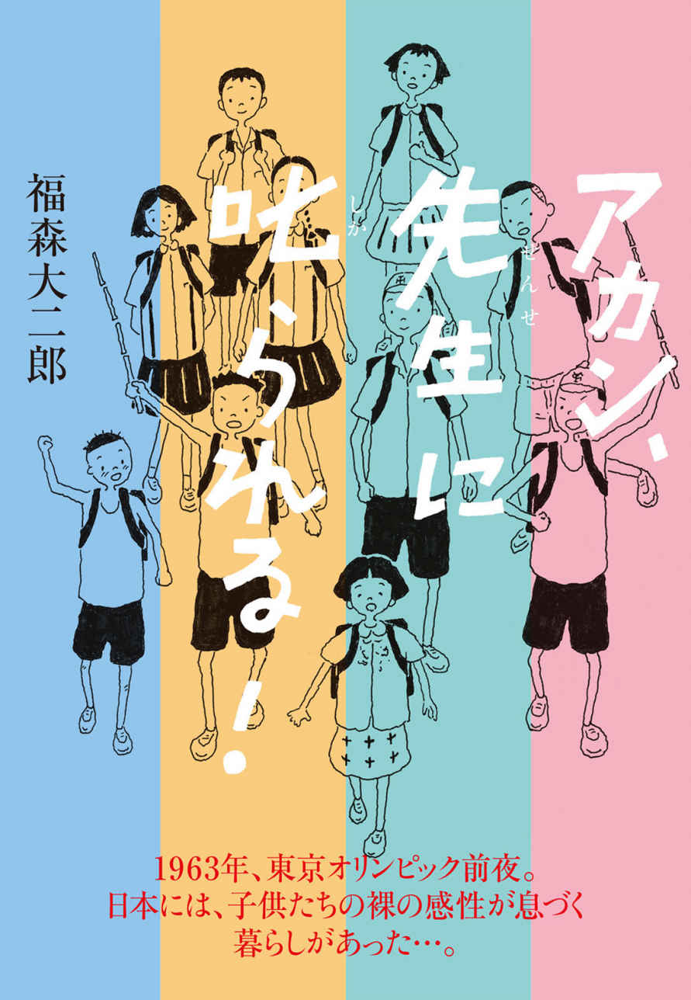

| アカン、先生に叱られる！ 単行本版 (アカン、先生に叱られる！シリーズ) | |
| 福森大二郎 | |
| (2015) | |

【主な登場人物】
勝ちゃん（勝二）...............元気いっぱいの小学四年生。一番の弱点は、困ったことが起きると、すぐに泣けてくること。本物語の主人公。
信ちゃん（信二） ............ちょっとやんちゃな、勝ちゃんの同級生。本物語のもう一人の主人公。
一ちゃん（一雄） ............幡村の子どもたちのまとめ役。真面目な六年生。
紀ちゃん（紀子） ............女の子のまとめ役。男の子との喧嘩にも負けない勉強もできる六年生。
武夫ちゃん（武夫） .........体育が大好きな五年生の男の子。ラジオ体操がとりわけ得意。
広子ちゃん（広子） .........勝ちゃんや信ちゃんが、口も勉強も敵わない同級生。紀ちゃんの妹。
花ちゃん（花） ...............男の子のように元気がいい双子の姉。三年生。
円 ちゃん（円） ............少々気弱な男の子。花ちゃんが双子のお姉さん。
黒ちゃん（義男） ............真黒になって遊びまわる元気な二年生。「黒ちゃん」は、愛称。
ひろみちゃん（ひろみ）......甘えん坊の小学一年生。ときどき事件を起こす。
男先生（高橋和夫）............四年生の担任。立派な体躯、厳格な指導で父兄の信任も厚い。
女先生（山本みちこ）.........勝ちゃんや信ちゃんたちを入学から三年生まで担任してくれたやさしい独身の先生。
教頭先生（山田健）............学校中で一番怖い先生。壇上でのお説教が長い。
校長先生（坂本平八）.........丸い眼鏡をかけ、いつも笑みを絶やさない一番偉い先生。一番やさしい先生でもある。
夏のはじまり
家を飛び出した瞬間、夏の強い光が射すように全身をつつんだ。
真っ青に広がる空を見上げながら、今日も暑くなるな...と勝ちゃんはため息をつく。夏休みまでまだひと月余り。それでも間近に迫った夏休みは、じっとしていられないほど勝ちゃんをワクワクさせた。
朝の集合場所、お寺さんへ一気に走り出す。
白いランニングシャツと半ズボン、素足にズック。帽子は小学校に入学してからずっと王と長嶋の巨人軍だ。背中のカバンがあまりにカタコト鳴るのでアッと宿題を思い出したが、同級生の信ちゃんも宿題なんか絶対にしてへん！と勝手に思い込む。ふとよぎる男先生のいかつい顔...。三々五々集まってくる村の子どもたちの「おはようさん！」が、勝ちゃんの不安をすぐにかき消した。
東京オリンピックを来年に控えた昭和三十八年。
勝ちゃんは、小学四年生。
ラジオからは三波春夫が歌う『東京五輪音頭』が盛んに流れ、学校や子どもたちのあいだでもオリンピック、オリンピックと何かにつけて話題になった。下の子たちから「オリンピックって、何？」と聞かれても、「いろんな国のスポーツ選手が競争するんや！」と答えるのが精一杯で、最後は「うるさいな！」と突き放した。本当のところはよくわからなかったのだ。
世界中からいろんなスポーツ選手が東京にやってくる...。担任の男先生が「スゴイぞ、スゴイぞ」といくら連呼しても実感がわかない。見たこともなければ、東京にも行ったことがないので想像すらできなかった。別の小学校で先生をしているお父さんに、「オリンピックやからテレビを買って！」とせがんでも、「まだ、まだ...」のカラ返事ばかり。テレビのある家は村でも二、三軒しかなかったし、学校の図書館にあるテレビも普段はカーテンのような分厚いカバーがかけられていて、よほどの番組でもないかぎり見せてもらえなかった。それが言い訳ではないにしても、勝ちゃんにとっては遠いところで開かれるオリンピックよりも、もうすぐはじまる夏休みのほうがずっと大事だった。
勝ちゃんが住んでいる東海地方、山間のとある県境に位置する幡村の子供たちは、朝八時に、村のお寺さんの境内に集合していっしょに登校する。集合するといっても児童はたったの十人。誰かが遅れたり来ていなかったりすると、上級生が家まで呼びに行くことになっていた。
「ひろみちゃんが、来てへんで」
信ちゃんがちょっと大袈裟に報告する。
「またか...」
阪神タイガースの野球帽をかぶったまとめ役の六年生、一ちゃんが境内を飛び出す。間もなく一ちゃんが、おばあちゃんに手を引かれて大きなカバンを背負った一年生のひろみちゃんと戻ってきた。
「この子はいつもグズグズして、堪忍な」とおばあちゃんがみんなに謝った。
「まだ一年生やから...」と一ちゃんは上級生らしくかばったが、おかっぱ頭のひろみちゃんは今にも泣き出しそうな顔をしている。小学校に併設されている保育園では名うてのお転婆さんだったひろみちゃんも、小学校にはなかなか馴染めないでいた。上手に編んだおさげをしている紀ちゃんが駆けよって、お姉さんらしくひろみちゃんの手を取った。
やっと全員が揃った。
元気いっぱいの二年生、黒ちゃん。三年生は、双子の姉弟、男勝りの花ちゃんとちょっと気弱な円ちゃん。四年生はやんちゃ仲間の勝ちゃんと信ちゃん、しっかりものの広子ちゃん。五年生には体育が得意な武夫ちゃん、六年生が一ちゃんと広子ちゃんの姉、紀ちゃんというメンバー。男子六名、女子四名。
「みなさん、おはようございます！」
一ちゃんがいつも通り、朝の挨拶をして、登校がはじまった。
子どもたちが通う原小学校は近隣の集落の子供たちが集まる学校で、通学に徒歩で三十分以上かかる子供たちもいる。幡村の子どもたちの通学はお寺さんから十分ほどの距離。遠くから通う子たちに比べればはるかに楽で、学校につづく道の両脇には、キュウリやナス、トマト、カボチャ、スイカといった野菜が小さな作付けで栽培されていた。初夏の畑は活き活きとした彩りと実りに満ちていて、早くから畑に出ている近所のおじさんからも声がかかる。
「学校、がんばりや！ 」
「ハァーイ！ 」
元気な花ちゃんが応える。
「もういくつ寝ると、夏休み...」
勝ちゃんが、能天気にお正月の歌の替歌を歌いだす。
「夏休みにはスイカ食べ、張川で泳ぎましょう...」
どこで拾ったのか、信ちゃんも細竹の棒を振り回しながら、勝ちゃんにつづいた。
「ほんまに下手やなあ」と広子ちゃんが笑うと、さっきまで泣きべそをかいていたひろみちゃんまでゲラゲラ笑い出して、たちまちみんなの笑い声の輪がひろがった。途中まで付き添ってきたおばあちゃんも、「しっかりな！ 」と言い残して帰って行く。
ひとしきり笑い声がつづいた後、勝ちゃんは急に真顔になって、「今年は、なんとしても川渡りを成功させんとアカンな」と信ちゃんに言った。
「四年生やもん、来年は東京オリンピックや。勝ちゃんもぼくも今年は浮き輪なしやで！ 」
信ちゃんも勢いよく棒を振り回して、決意の意思表示をする。
二人が川渡りを目指す張川は、川幅が五十メートルを超えるところもある一級河川である。原小学校にはプールがなく、四キロメートル以上離れた市営のプール以外には近くに水泳ができる施設はなかった。
そのため夏季になると原小学校でも、張川の一部を区切って特別な水泳の授業を開いた。
水深はせいぜい三十から五十センチ。泳ぐというよりは水浴びに近く、泳ぎ方もひとりひとり勝手気ままだ。それでも四年生以上の高学年になると、男先生らが中心になって、本格的な指導がある。自由形や平泳ぎ、背泳ぎ。すぐさま習得できる子もいたが、流れのある川での泳ぎはそれなりにむずかしく、浮き輪にたより、自分流の泳ぎに戻ってしまう子も少なくなかった。
一ちゃんや武夫ちゃんが、できる子の代表格。勝ちゃんや信ちゃんは、まだできない子の域を抜け出せないでいた。立ち泳ぎのような変則形。信ちゃんは「忍者泳ぎや！ 」と自慢したが、両腕の動きは自由形風、足は平泳ぎといった有様で、変な泳ぎ方に変わりなかった。そもそもこの地に伝わる忍者泳法は、泳ぎの巧みさや速さを求めるものではない。
夏休み。幡村では生徒の親が交代で監視員となり、村の近くの張川で子供たちのための水泳会を開く。学校と同じように岸から近い安全な場所に区切りの赤旗を立て臨時に設営する泳ぎ場。区切られる場所は岸から五、六メートル、流れにそった長さが二十メートルほどだが、向こう岸までの川幅はゆうに三十メートルを超える。勝ちゃんと信ちゃんが目指すのは、区切りの赤旗を越えて、浮き輪なしで向こう岸の岩場まで泳ぎきることへの挑戦だ。流れのある川を浮き輪なしで泳ぎきるには、それなりの体力や気力も求められる。幡村の男の子である以上、上級生になったからにはどうしても通過しなければならない恒例の儀式でもあった。
待望の夏休みは、すぐそこまでやってきている。
「幡村の子やもんな！ 」
勝ちゃんは自らを鼓舞するようにつぶやき、「せや、せや！ 」と信ちゃんも調子付いておどけた時、パァァン！ と何かが爆ぜるような音が響いた。
信ちゃんが振り回していた棒が、ちょうど八分目ほどに熟れかけた道端のスイカに触れ、中から真っ赤な果肉が飛び出したのだ。完熟前のスイカはほんの少しの衝撃を加えるだけで面白いように爆ぜる。
「あらら、あらら...」
女の子たちが囃しはじめる。
「せやけど、ちょっと触っただけやで」
信ちゃんは弁解しながら、隣のスイカを棒でつついた。
パァァン！
スイカが、再び爆ぜた。
「あらら、あらら...」
「勝ちゃん、ぼく、ちょっと触っただけやもんな、なッ！ 」と信ちゃんは勝ちゃんに同意を求めながら、証拠を隠すかのように棒を勝ちゃんに手渡した。
「ほんまに、ちょっとだけやったもん。ぼくも、見たもん」
勝ちゃんは信ちゃんをかばったが、ちょっとだけの素振りを真似ているうちに、勝ちゃんも不意に隣のスイカを叩いてしまった。
パァァン！
「あらら、あらら...」
「アカン、先生に叱られる！ 一ちゃん、どうしよう...」
勝ちゃんも信ちゃんも、今にも泣き出しそうな顔になる。
一ちゃんも、一瞬顔を曇らせた。
「こらあ、山上のおっちゃんに叱られるで。あのおっちゃんは鬼や、怒らせたら大変や...。しゃあない、三個だけや、食べてしまお！ 」
一ちゃんは、率先して爆ぜたスイカの片割れを口にした。
「めちゃ、甘い！ 」の歓声が合図だった。
「スイカ食べるの、今年、初めてや！ 」
五年生の武夫ちゃんも続いたので、先程まで囃したてているだけだった女の子たちも、いっせいにスイカを口に運んだ。
「ほんまに、おいしいな！ 」とひろみちゃん。円ちゃんと黒ちゃんも一気にスイカを頬張る。初夏、まだ若いスイカはみずみずしく、朝露を残して少し冷えたスイカはこの上もない贈物だった。とりわけ程よく爆ぜたスイカは食べやすく、児童十人のお腹におさまるのに時間はかからない。後には食べ散らかしたスイカの皮...。
一ちゃんが「はよせんと学校に遅れる、上手に仕舞いせんとえらいことになるで」と急かす。
勝ちゃんと信ちゃんは、スイカを育てるために土の上を覆う藁を掻き分けて棒で穴を掘り、スイカの皮を土に埋めて何もなかったかのように再び藁で覆った。
「一丁、上がり！ 」
信ちゃんは持ち前の健気さで快哉したが、勝ちゃんはこころのどこかに、そこはかとない後ろめたさを覚えた。
原小学校は、全校児童が二百人にも満たない小さな学校だ。
なかでも四年生はとりわけ少ない十七人。入学したときには十九人だったが、お巡りさんの子の恵ちゃんとお父さんが亡くなった智ちゃんが転校してからは、新しい転入生は誰も来なかった。そのため遠足や修学旅行ではバスを借り切るにも人数が足らず、一学年下の児童三十一人がいつも繰上げで同行しなければならない、ちょっと情けない学年だった。それでも学校中で一番児童数の少ない学年は、とかく話題の多い一番元気な子どもたちの集団でもあった。
その日、最後の五時間目の授業も終わり、担任の男先生がいつものように今日一日のことを振り返る反省会の時間。そのころには勝ちゃんも信ちゃんも今朝のスイカ事件をすっかり忘れていた。
「先生が大嫌いなのは、悪いことをしても知らん振りをすることだ。たとえそれが突発的に起きたことであっても、なんで正直に話せんのか...、なんで素直に謝れんのか...」
男先生がゆっくりと威厳のある口調で話しはじめたとき、勝ちゃんは思わず斜め前に座っている信ちゃんを見た。信ちゃんも心配そうに勝ちゃんを振り返っている。
さっきまであんなに暑かった教室が、急にひんやりしてくる。
アカン...、と勝ちゃんは咄嗟に思った。
そう思う間もなく、男先生の出席簿のパァァン！ が勝ちゃんと信ちゃんの頭に飛んだ。広子ちゃんがそばで笑いをこらえている。勝ちゃんは、なんで広子ちゃんだけはいつも叩かれへんのやと思ったが、グッとこらえた。
後から聞くと、一年生のひろみちゃんの服が赤く汚れているのに気づいた担任の女先生が問い質して、幡村の子供たちの今朝の悪さが、瞬く間に発覚してしまった、というのだ。ひろみちゃんはいい子なのだが、甘えん坊でお転婆さん。着ていたのが花柄のシャツだったこともあり朝は誰も気付かず、時間もなかったので念のための口封じもしなかった。
いいこと、悪いこと。小学一年生の女の子は、泣けてくるほど正直だった。
「勝ちゃんと信ちゃんが、スイカを叩いた！ 」
「幡村の子は、すぐに校長室の前の廊下に集まりなさい！ 」
静まり返った校舎に、男先生よりもっと強い語気で、教頭先生の校内放送が流れた。
「また勝ちゃんと信ちゃんや...」
教室の誰かが、囁いている。
なんでいつも、こうなってしまうんやろ...と勝ちゃんは思う。
信ちゃんのせい？ ぼくのせい？ 家に帰ったら叱られるやろな、山上のおっちゃんが怒鳴りこんでくるやろな、と情けなくなる。
教室を出て校長室に向かう。
まだ叱られてもいないのに、勝ちゃんの目からはもう涙が溢れ出ていた。
七夕さんの楽しみ
原小学校には、年間を通して大きな催しが三つあった。
ひとつは夏休み前の七夕さん。あとは秋の運動会と学芸会。
小学校の催しは地域を挙げてといっていいほど近隣の村々すべての人が楽しみにしていて、何をさしおいてもみんなが参加した。勝ちゃんたちも七夕さんの日には普段の授業がないこともあり、ちょっとしたお祭り気分で、朝から七夕さんの準備に熱中する。
七夕さんが、いつから原小学校の恒例行事になったのかはよくわからない。
もともとは村々の神事としてその年の豊作を先祖の霊にお祈りするお盆の行事だったという。笹に願いごとを書いた短冊を飾るのはその名残で、女のひとが裁縫や歌づくりが上手になるように願ったとの言い伝えもあるらしい。とはいえやはり一番は、満天の星空、天の川に輝く織 女 星（＝おり姫星）と牽 牛 星（＝ひこ星）が年に一度だけ会うという七夕伝説だ。
でも、なんで小学校の行事になったんやろ？ と勝ちゃんたちは思う。おじいちゃんや訳知りの近所のお年寄りに聞いてみる。それによれば、お盆のころには忙しい農作業も一段落するので家族や近所の人が集まってご馳走を並べ、天の川をながめながらつかの間の休息を楽しんだとか。やがてそうした習わしが七夕さんの行事になったという。みんなが集まるなら、小学校。校庭はいつも、地域の人たちが集う晴れの場、みんなの嬉しい気持が受け継がれる場所なのだ。
初夏の日差しが遠慮なく、ジリジリと校庭に降り注ぐ。
麦わら帽をかぶり、肩に見事な枝ぶりの青竹を担いだお父さんたちが汗をかきながらやってくる。今年の七夕さんの準備は、上村の父兄の担当だ。毎年、校区内を順繰りし、七夕さんに使われる青竹の調達が行われる。
上村の同級生の弘志ちゃんたちが誇らしげに見守るなか、青竹が小学校に運ばれてきた。朝からずっと心待ちにしていた子どもたちがいっせいに校庭に飛び出し、それぞれの学年にあてがわれた場所に運び込む。
さっそくお父さんたちから枝払い用の鎌が手渡される。
先生たちはけがのないようにとくどくどと使い方を説明するが、子どもたちにとっては家々で日常的に使い慣れた道具。手際良く余分な枝を払い七夕さんらしい笹飾りができるよう枝ぶりを整える。それでもそこかしこで時おり起こる「アッ！ 」、「ギャァァァー」のにわか騒ぎ。何事かと慌てふためく先生たちをよそ目に、お父さんたちは鷹揚なものでいつものように子どもたちを叱りつける。
「アホな子は、どこの子や！ 」
枝払いがすむと次は青竹を立てる台座の杭の設営だ。
低学年の子どもたちには少々荷が重く、殆どがお父さんたち任せ。高学年は男の子たちが交替で精一杯槌を杭に振りおろし、六本の七夕飾りの下準備を終えた。
校庭に整然と並べられ、静かに飾りつけを待つ七夕さんの青竹。
教室では、いよいよ、願い事を短冊に書く時間になった。
「きょうは七月七日。天の川やおり姫星、ひこ星が一年中で一番きれいに見える日や。おり姫星とひこ星が一年に一度だけ会う日、とも言われている。詳しい話を知っている人はいるかな？ 」と男先生がいつになく冗談めかして話しだした。勝ちゃんは、それはデートや！ と思わず言いそうになったが、グッとこらえた。
男先生はつづけて、「四年生は残念なことに、学校中で一番生徒が少ない学年だ。せっかくの七夕さんやから、たくさん願いごとを書いて他の学年にも負けない立派な笹飾りにしてほしいと先生は思う。短冊はなんとしてもひとり十枚は書かんとな！ 」
信ちゃんがすかさず手を挙げて、真顔で男先生に尋ねる。
「先生、十個も願いごとがない子は、どうすればいいですか？ 」
「そうか、信ちゃんには願いごとがないんや...」
「またアホなこと言うとる！ 」
広子ちゃんが、自信たっぷりに金色や銀色、五色の短冊をかざす。
「なんでも好きなこと書いたらええんや！ 信ちゃんはとりあえず、九九がちゃんとできるようになること、やんちゃをやめることやな」
「そしたら広子ちゃんはやさしい女の子になることやな」
勝ちゃんが茶化すと、いきなり広子ちゃんが後ろの席から飛びかかってきて、ゲンコツを放った。
キツイ子や、と勝ちゃんはいまさらながらに思う。
いつもいつも思いっきり叩かれてなんで抵抗しないのか。女の子には手を出さないといえば、いかにも男の子らしい。本当のところはグッと我慢の連続だ。保育園からずっといっしょの広子ちゃんは利発な女の子でいまだに口でも勉強でも敵わない。下手に抵抗すればその百倍もお返しが帰ってくる、というのが勝ちゃんと信ちゃんの本音だ。
二人は、短冊十枚分もの夢なんてもちあわせていなかった。
ずっとずっと先の中学や高校のことなんて想像もできないし、将来の夢と言われてもいまはまったく浮かんでこない。ただ、他の学年が三十人はこえることを考えれば、十七人しかいない四年生の笹飾りが、見劣りすることだけは理解できた。
先頭を切ってみんなを仕切ったのは、やっぱりしっかりものの広子ちゃん。「負けたら、アカン！ ひとり二十枚や！ 勝ちゃんや信ちゃんはいつも悪さばかりしてるんやから、その倍は願いごと書かんとアカンよ！ 」
広子ちゃんの指導力は絶大だった。
勝ちゃんも信ちゃんも空っぽの頭を絞った。くじけそうになって時折広子ちゃんを見ると、赤や黄、紫、金、銀...の短冊と必死に格闘する広子ちゃんの姿があった。
「広子ちゃんは、偉い！ 」
勝ちゃんも信ちゃんも心底そう思う。正直にそのことを口にした。
「二人とも、絵だけはそこそこ上手なんやから、願いごとが書けへんのやったら、折り紙にたくさん絵でも描いてみたら...」
勝ちゃんと信ちゃんも絵を描くことだけは大好きだったので、広子ちゃんの助言は嬉しかった。倍の四十枚はむずかしくても、二人は相談しながら図工の時間に習ったちょっとした工夫も試みた。
いろんな絵を描き、ハサミで自由な形を切りだし、独特の短冊を創りだす。心配そうに見回っていた男先生の「ええな...」の励ましが呼び水になって、笹飾り作りは一気に加速する。
お昼の給食の後、みんなで短冊や切り出した折り紙を校庭で青竹に飾り付けた。最後に、男先生が五色の紙テープを青竹のいちばん上から吹き流しのように飾って、笹飾りは完成する。みんなが力を合わせて横たわる笹飾りを杭に立てかけ、倒れないように縄でしっかりと固定した。
午後も三時を過ぎる頃には、各学年自慢の笹飾りが次々に完成し、やがて校庭には見事な七夕さんの笹飾りが六本たなびいた。
夜に備えた大きな照明灯も杭の根元に設置され、すべての準備が終わる。
校長先生が、各学年の笹飾りを見回りはじめた。
「ええな。今年はみんな気張ったな！ 」
同じころ、弘志ちゃんのお父さんたちのもう一つの大仕事も、完成しつつあった。
七夕さんの夜に多くのひとが集まるのは、笹飾りを見る楽しみだけではなかった。一年に一度の映画の野外上映。お手伝いのお父さんたちの大仕事は、野外上映のための天幕の設営だ。今年は石原裕次郎の映画が上映される。町の映画館から出張して来た映画技師も準備に余念がない。
校門の近辺には、出店も並びはじめた。金魚すくいや綿あめ、おもちゃ屋など五軒も並んでいる。気の早い父兄も、映画の見やすい場所を確保するために陣取り用のゴザをもって、三々五々集まってくる。
映画がはじまるのは夜の七時過ぎからだが、まずは子どもたちの七夕さんの笹飾りをみんなが見て回る。なかには短冊をそれぞれにもってくる父兄もいて、子どもたちと賑やかに飾りつけ、新たに短冊を書きくわえて七夕さんを楽しむ家族もいた。ひとしきり笹飾りに興じた後は、あちこちのゴザで少し早い夕餉のお重をひろげている。
勝ちゃんの家からは、お母さんとおじいちゃん、おばあちゃん。親戚のおっちゃん夫婦（おっちゃんがおじいちゃんの弟）も来てくれた。お父さんは別の小学校の先生、六つ年上の兄ちゃんは高校生なので来ていない。おっちゃん夫婦の三人の子どもたちは家を出てよその町で働いているので、おっちゃんたちは農業をしながら二人で暮らしている。運動会や学芸会にはいつも来てくれて、とりわけおばちゃんが作ってくれるお重に詰めたお稲荷さんや太巻きのお寿司は格別のおいしさだった。
おじいちゃんとおっちゃんは、はやくも水筒に入れてきたお酒をちょびちょびやりはじめた。おばあちゃんがいつものことながら、「ほどほどにしときや！ 」とおじいちゃんを睨みつける。
「ほんまにええ七夕さんや、勝ちゃんたちも気張ったな」
おじいちゃんたちは意に介さない。
少し先のゴザには、信ちゃんの家族もいた。やはりお重をひろげて卵焼きやお寿司を頬張っている。ただちょっと心配なのは、飼い犬のジローも来ていることだ。ジローはスピッツや秋田犬などいろいろ混ざっている雑種の白い大型犬。人懐こく、むやみに人に咬みついたりはしない。みんなに好かれているいい犬なのに、ときどき興奮しすぎて暴走しては問題を起こしてきた。すでに先程来、そわそわと落ち着きがない。
「信ちゃん、ジローはしっかり繋いでおかんと、きょうはまずいで...」
勝ちゃんは思わず信ちゃんに声をかけた。
「大丈夫、ジローはもう大人や！ 」
信ちゃんはまったく気にする様子もない。
映画の上映を待つ間、勝ちゃんや信ちゃんは金魚すくいに熱中し、夜店を何回も迂回しながら、七夕の特別な夕暮れの時間を楽しんだ。
いつのまにか、紀ちゃんや広子ちゃん、花ちゃんやひろみちゃんも浴衣に着替えてきて、ワクワクするような光に照らし出された夜店を楽しんでいる。
「かわいらしいな、別人みたいや」
「この、スケベ！ 」
広子ちゃんのゲンコツが、勝ちゃんの頭をまた襲った。
突然だったので今度は本当に痛い。
泣きたくなるのをこらえながら、褒めても茶化しても広子ちゃんはほんまにキツイな、と勝ちゃんは思う。
日が落ちると山里の夜は一気に深まる。
七夕さんの笹飾りの足元に照明灯がともされた。夜空に上るような光が薄暮のなかに笹飾りの短冊を鮮やかに浮かび上がらせる。
暗闇の中、天幕に届く一条の光。
色とりどりの短冊や紙テープがいままさに願いを届けるように揺れ動く。
上映会がはじまった。
参加した誰もが、こころ和らぐ七夕の笹飾りの光景と久方ぶりの映画。
夜気とともに頬をなでる涼風が心地いい。
「やっぱり、裕次郎はカッコええな...」
あちこちから、感嘆の声が漏れる。
それでも事件は、起きる。
映画がいよいよ佳境にはいるころ、ジローが何を思ったのか盛り上がる映画の音楽に合わせるかのように突然全速力で走りだし、天幕の裕次郎に飛びかかった。弧を描きながら飛び込む姿は、後から思うと外国のアニメ映画のようでちょっとカッコ良くもあった。とはいえ、この上もなくどうしようもない狂態であることに変わりない。
「ワッ！ 」という驚きとも哄笑ともつかないざわめき。
「勝ちゃん、助けて！ 」と信ちゃんが叫ぶ。
興奮したジローを捕まえるのは容易なことではない。
二人が必死になって追いかけてもいっこうにジローの暴走はおさまらず、夜目のなかでざわめく観客をもてあそぶように、吠えながら逃げ回った。
「ギャァァァー」
「ワッ！ 」
「...」
上映会は、中断。
まただ、と勝ちゃんは思った。だから信ちゃんには言ったのに...。
しばらくして、信ちゃんのお父さんたちがようやくジローを取押さえ、騒ぎはおさまった。お父さんの「すんませんな...」のお詫びの声が切なかった。
翌日、七夕飾りは小学校近くの張川に流された。
勝ちゃんと信ちゃんは川面を沈んだり浮いたりしながら流れていく青竹をぼんやり眺めながら見送った。
「ぼくらの泳ぎみたいやな」と信ちゃん。
「ほんまや」と勝ちゃんは努めて明るく答えた。
「夕べは堪忍な...」
信ちゃんは沈んだ声で詫びた。
「お父さんに叱られたやろ...」
勝ちゃんが慰める。
その直後だった。
二人は男先生の太い腕で、後ろからヘッドロックされる。
「ちょっと職員室で話さんといかんな！ 」
ボーイズライフ、夏
幡村の夏休みの朝は、ラジオ体操ではじまる。
朝、六時三十分の少し前。お寺さんの境内には小学生全員と老人会のひとたち、さらには保育園に通う子どもたちなど、総勢二十人ほどが集う。
勝ちゃんは朝が苦手だ。
とくに夜更かしをしているわけではない。理由はわからないけれど、とにかく朝が苦手で、お母さんやおばあちゃんに叱られながらしぶしぶラジオ体操に通っている。もし出欠のスタンプ帳がなく、新学期での提出が義務付けられていなかったら、とっくにズルをしていたに違いない。とはいえ、スタンプを押してくれるお寺さんのご住職の奥さんはとりわけ厳しく、遅刻をすると朱色の参加スタンプの中に黒のサインペンで「▲○○分」と大書する。勝ちゃんのスタンプ帳にはすでに黒々とした▲の書き込みがつづいている。
「勝ちゃんは、今日も遅刻や！ 」
信ちゃんが大げさに囃したてる。
小さな子どもたちもつられて笑う。
最前列でみんなのほうを向いてお手本となる体操をする一ちゃんと紀ちゃんは、いつも真剣だ。ラジオ体操が得意な武夫ちゃんも力強く大真面目にやっている。勝ちゃんもこの時ばかりは、恥ずかしそうに頭をかきながらそっと体操の一番後ろの列に加わる。何度叱られても懲りないのはアホな猫と同じや...と反省するのだが、家に帰るころまでにはいつもすっかり忘れてしまう。
ラジオ体操からの帰り道、信ちゃんがにじり寄ってきた。
「今日はええ天気やな、いよいよやな！ 」
約束の川渡り。
決行だ。
「信ちゃん、負けへんで！ 」
勝ちゃんも精一杯、虚勢を張る。二人はワクワクしながら境内を後にした。
家に帰って兄ちゃんといっしょの部屋に入ると、「涼しいうちに、夏休みの宿題、やっときや！ 」とお母さんの声が台所のほうから聞こえてくる。勉強机が二つ並ぶ八畳の部屋。剣道の朝練で夏休みも早朝から高校の道場に通う兄ちゃんのふとんはすでに片づけられている。勝ちゃんもまずはふとんを押し入れにと思いながら、ついつい横になってしまう。心地いい朝の涼気が開け放しの障子から入ってくる。早くも襲ってくる睡魔のもとで、勝ちゃんは再びアホな猫になった。
「勝ちゃん、いつまで寝てんの！ 信ちゃんが水泳の誘いに来てくれてるで！ 」お母さんの声でようやく目覚める。また、やってしまった！
「お昼はちゃんと食べていかんと！ 」
お母さんの声がいつになくとげとげしい。
「信ちゃん、堪忍な。お昼ごはん食べた？ 」
「水泳の日は、しっかり食べます！ 」
「信ちゃんは偉いな。スイカでも食べて、待っていてやって...」
勝ちゃんはお昼のソーメンをすすりながら、縁側でスイカを頬張る信ちゃんを見た。勢いよく黒い種を庭に飛ばしている。ほんまに調子ええ奴やな、と思う。信ちゃんは大人たちの前では、いつもいい子なのだ。本当はやんちゃなのに、と勝ちゃんはやっかむ。
食事を済ませると勝ちゃんは急いで着替えのパンツやタオルをビニール袋に詰め込み、半ズボンから水泳パンツにはき替えた。巨人の野球帽にランニング、首には水中メガネ、下は水泳パンツでサンダル履きだ。信ちゃんもランニングに水泳パンツ姿で、頭には大きな楕円型の水中メガネ。いろいろと詰め込んだビニールの袋と水筒を肩からかけ、浮き輪もすでに膨らませて抱かえている。今日は浮き輪なしの日やのにアホやな...、と勝ちゃんは思う。
真っ青な空に、ぽっかり浮かぶ真っ白な雲。
暑い暑い夏の午後、川渡りにはうってつけの日だ。
二人は意気軒昂に勝ちゃんの家を出た。
川原へはいつものお寺さんへの道から田んぼの脇の農道を通り抜けていく。普段の登校時とは違って、水泳会には開始時間の午後一時に合わせて、参加する生徒や付き添いが、三々五々直接川原に向かう。一面に広がる田んぼ。青々とした稲穂の間を麦わら帽がそこかしこで忙しそうに泳いでいる。
「水泳会か？ 気ぃつけんと、アカンで！ 」
突然、通り沿いの田んぼから声が届く。隣家のおじちゃんとおばちゃんだ。夏は田んぼの草取りが忙しい。
「今日は、川渡りや！ 」
勝ちゃんが勢いよく応えて、二人は川原につづく鬱蒼とした雑木林の小道を走り抜ける。一瞬、静まりかえるセミの声。気にもかけず一気に進む。二人を引き寄せるように川の流れの音が近づいてくる。
視界が突然広がった。
夏の強い光が、川面から跳ね返ってキラキラ輝いている。
今日の監視当番は、一ちゃんのお父さんと花ちゃん姉弟のお母さん。保育園に通う子どもたちや付き添いのじいちゃん、ばあちゃん、中学生の拓ちゃんや守ちゃん、美和ちゃんや節ちゃんも見張り兼、お遊びで参加している。一ちゃんが号令をかけて、さっそく全員参加の準備体操がはじまった。
気休め程度の準備体操が終わると監視のお父さんの笛が鳴り、みんなが一斉に川へ飛び出す。
水泳会は、十五分泳いでは十分の休憩を繰り返しながら、一時間半。泳ぎ場は、竹に赤旗をつけた区切り棒で川を仕切り、安全な場所を確保している。水深は深いところでも五十センチ、手前の岸からは五、六メートルで、長さも流れにそった二十メートルほどだ。この範囲内で遊んだり泳いだりする分には大きな危険はない。
それでも今年の勝ちゃんと信ちゃんには、いつになく目障りな赤旗に思えた。もちろん川渡りは赤旗を越えなければ達成できない。あからさまに赤旗を無視するような泳ぎは、一応、厳禁。とはいえ川原の砂場に横たわりながら煙草をくゆらし、日傘のもとでのおしゃべりまじりの監視は、これまで一度も事故が起きなかったこともあって長閑そのもの。赤旗の内側にいる小さな子たちには目が届いても、すでに向こう岸に泳ぎ着いた中学生や高学年の子どもたちの泳ぎには無関心のようにも見える。むしろ中学生任せの塩梅だ。
監視の隙をいかに狙うか。
今日の二人は最初からそればかり気にしていた。勝ちゃんはうすうす気づいていたが、信ちゃんがさっきから赤旗の近くで潜ったり立ったりの泳ぎを繰り返している。浮き輪なしだ。
信ちゃんが突然、素潜りの体勢から川渡りを決行する。
見ているのは、勝ちゃんと向こう岸に渡っている一ちゃんや武夫ちゃん、中学生の男の子たちだけだ。脚の蹴りは平泳ぎで、両腕は自由形もどきの忍者泳ぎ。一瞬、姿が見えなくなる。どうしたのかと見ていると五メートルほど流されて下流から顔をだし、流れに逆らうように川を横切っている。再び潜った。途中、何度か顔を出して泳いだり沈んだりする。赤旗からおおよそ二十メートル。流れの勢いもそれなりにある。ちょっと心配になる。でも、一ちゃんや中学生たちも、ちゃんと見張っているし...。勝ちゃんも手前の岸辺からじっと信ちゃんの泳ぎを見守る。
しばらくして信ちゃんが向こう岸から誇らしげに腕をふった。
信ちゃんは川渡りを浮き輪なしでやり遂げたのだ。
スゴイ！
勝ちゃんは感心する。同時に、勝ちゃんの体も堰を切ったように素潜り体勢にはいった。
浮輪はない。水中では川の流れが妙に高い音で耳に迫ってくる。
ジュル、ジュル、ジュル...。
信ちゃんと同じく、脚は平泳ぎ、腕はやはり自由形や平泳ぎが混ざった変な泳ぎだ。一生懸命に腕をかいているのになかなか思うように進まない。途中、ちょっと脚をつこうと思ったのが間違いだった。
流れが急に強くなる。
脚が着かない...。
アカン！ 溺れる...。
勝ちゃんは必死だった。なんとか前に進みたいという思いと水の勢いに負けそうになって溺れるような不安が交錯し、大混乱に陥る。
水中でバタ、バタ、バタ...。
ジュル、ジュル、ジュル...。
息継ぎがうまくいかない。苦しくなってもうダメかなと思った瞬間、右足に川底の大岩が引っ掛かった。わけもわからず大岩をキックする。反動がうまく作用して推進力がついた。息継ぎの顔出し。再び潜って大岩を思いっきりキック。川面から顔を出したときには、向こう岸の岩場から五メートルほどのところまできていた。勝ちゃんは、何ともいいようのない満ち足りた気分になった。
つい先ほどまでは、もうアカン！ と思っていたが、最後の力をふりしぼって泳ぐとこれまで経験したことのないような達成感が漲ってきた。
後で聞くと、一ちゃんたちは、ちょっとあぶないなと見張りつつ、最後は万が一でも助けられると判断してずっと始終を見守りつづけてくれていたとか。肝心の監視役の花ちゃん姉弟のお母さんは、上手に立ち泳ぎしてるな...と思いながら見ていたそうだ。一ちゃんたちの気遣いにはさすがの思いだったが、溺れそうになった苦しい息継ぎが上手な泳ぎに見えたなんて...。いい加減すぎる監視やなと、少々複雑な思いもよぎったが、夏休みの勝ちゃんは、物事を深く考えないアホな猫頭だった。
無断の川渡りに気づいた一ちゃんのお父さんが慌てて対岸まで泳いできて、「お前ら、大丈夫か」と勝手に赤旗を越えた二人をちょっと笑いながら叱った。一ちゃんや中学生の拓ちゃん、守ちゃんは当然のように見守ってくれていたので、「ようやったな！ 」と二人を迎えた。
幡村の男の子の矜持が、達成された。
その日、いつになく高揚していた二人は、水泳会が終わっても泳ぎ場を離れなかった。
「早よう帰らな、アカンよ」と花ちゃん姉弟のお母さんに言われたが、なんとなく残ってしまった。
濡れた水泳パンツのままランニングを着て、二人は川原で今日の川渡りの話をした。
勝ちゃんはちょっと恥ずかしかったけれど、溺れそうになったことを信ちゃんに正直に話した。すると信ちゃんも実は溺れそうになって、途中、川底の大岩をキックしたと言うのだ。
「同じや！ 」
二人は大笑いをしながら、しばらくボォーと川面を眺めていた。
眩しく反射する夏の光が、これまで感じたことのないような達成感と嬉しい気分で二人をつつんだ。
「お祝いや！ 」
信ちゃんがどこに隠していたのか、突然、２Ｂ弾と新聞紙を持ち出した。
「スゴイな、お祝いの〝バーン〟やな！ 」
勝ちゃんもすぐさま同意して、バーン遊びのための流木や岩陰に流れ着いた缶を探し始める。
バーン遊びは、スプレー缶や揮発性の高そうな缶を拾い集めて火の中に放り込み、爆発させる遊びだ。燃え盛る火の中で、空き缶は壮絶な音を発しながら爆発し、猛烈な火炎を噴き上げる。流木に火をつけるだけであれば、普通のマッチで用が足りる。わざわざ２Ｂ弾を隠し持ってきて、小気味良い爆音とともに火を点けようと企んだ信ちゃんの心意気が勝ちゃんにも伝わってくる。２Ｂ弾はマッチを擦るようにして発火させる簡易な爆竹だ。川原とはいえ、２Ｂ弾を使っての遊びはそもそも原小学校では禁止されていて、バーン遊びは、いうまでもなく厳禁されている。
とはいえ二手に分かれて流木や缶を拾い集める頃には二人に罪悪感はすでになく、バーン遊びの準備に夢中になっていた。しばらくして十個近くの缶が集まったところで、信ちゃんが２Ｂ弾を発火させ、その爆発時の発火で丸めた新聞紙に火をつける。つづけて追加の２Ｂ弾を数本投下。爆発音とともに流木がどっと投げ入れられた。火の勢いが出てきたところで手始めに二、三個の缶を中に放り込む。
二人は、声を合わせて、
「十、九、八、七、六...」と秒読みのカウントダウン。
バーン！
バーン！
バーン！
スゴすぎる！ と二人は思った。
つづいて何個かの缶を爆発させていると対岸の川伝いの県道を走っていたバスが急に止まり、運転手が飛び降りてきて大声で怒鳴りはじめた。
「こらァ、どこの子や！ 」
「よその子や！ 」と勝ちゃんが抗弁する。
「原小学校の悪ガキか！ 」
「原小学校のカシコや！ 」
「バスのアホ親父！ 」
信ちゃんも悪態をついて、勝ちゃんにつづいた。
その日の悪態を少し弁明すれば、普段の二人は言われるほどの悪ガキではない。どちらかといえば素直ないい子たちだ。幡村の子どもならではの川渡りの達成感と高揚が、無意識のうちに過激な発言や行動に走らせたのかも知れない。
夏休み期間中に二回ある、最初の登校日。
いつもならそれぞれの教室で、夏休みをどんな風に過ごしているかを簡単に報告するだけで、臨時の登校日は一時間ほどで終わる。その日は違った。担任の男先生が教室に入る直前に二人を呼びとめた。
いきなりゴン、ゴンと二人の頭に本気のゲンコツが飛ぶ。
「先生は、本当にがっかりした。校長先生のところに行きなさい...」
ゲンコツの痛さもあったけど、勝ちゃんの目からはもう涙がこぼれはじめた。いつもはやんちゃな信ちゃんも泣いている。
校長先生は学校中で一番やさしい先生だけど、学校中で一番偉い先生だ。二人にとって校長室は学校中で一番怖い場所でもあった。男先生に急かされて、校長室に入る。
校長室はシーンと静まり返っている。
勝ちゃんと信ちゃんのすすり泣きの声だけが響く。
直立不動で付き添う男先生。
教頭先生のいつもの長い説教が始まりそうになったとき、校長先生がそれを制した。
「そんなに泣けるほど、大変なことがあったのかね？ 」
【原郷 夏 了】
講堂の不思議な絵
バーン遊びは、川原で流木に火をつけ、拾い集めたスプレー缶や揮発性の高そうな缶を放り込んで爆発させる遊びだ。いうまでもなく学校からは厳禁されていて、ましてや近くを通りかかったバスの乗客を爆発音で驚かせ、激怒する運転手に暴言を浴びせ返す悪態はいたずらの域をはるかにこえていた。勝ちゃんと信ちゃんは、なんであんな無茶をしたんやろ...と、今更ながらに後悔した。
バーン事件の顛末は、勝ちゃんたちが流した涙ほど大きな罰にはならず校長先生ならではの判断が下る。
教頭先生のいつもよりずっと短いお説教の後で、校長先生は静かにほほ笑みながらひとつの提案をされた。それは夏休みの宿題とは別に、迷惑をかけた人たちへのお詫びの気持ちをこめて、見るひとの気持が温かくなるような絵を反省の作文といっしょに三枚描きなさい、というものだった。
見て温かくなるような絵ってどんな絵なんやろう...と、勝ちゃんと信ちゃんは困惑した。それも作文つきで三枚も描けという。絵を描くことは嫌いじゃない。それでも二人にはことのほか厳しい罰のように思われた。
校長先生は学校中で一番やさしい先生なのに、今回はキツイな、と二人は思う。
突然のバーン！ という爆発音で川辺の県道を走るバスの乗客をどれほど驚かせ、危険な思いにさせたことか。傍から見れば恩情あふれる校長先生の配慮も、勝ちゃんたちにとっては夏休みの宿題が、どーんと増えたことに変わりなかった。
バーン事件の直後、勝ちゃんと信ちゃんは、すでに罰を受けていた。
事件を知った村長さんは村の恥だと怒りに怒り、村長さんの厳命で「市民水泳大会の五十メートル競泳に出場して汚名を晴らしてこい」と言い出した。
プールで泳いだのはこれまで一、二度しかなく、ましてや五十メートルも泳ぐ自信はない、と二人は必死に訴え固辞した。そもそも大会は自由参加だったので、原村の小学生はこれまで一度も参加したことがない。
「男先生に聞いてくれたらわかる！ ぼくらは五十メートルも泳げへん！ 」
「四年生やろ！ 泳げんで、どないする！ 練習せい！ 」
「これから練習しても間に合わん！ やっと川渡りができたばかりや、プールなんかで泳げへん！ 」
村長さんは許してくれない。
最後は、「幡村の男の子の意地を見せてこい！ 」と送り出されたものの結果は推して知る、そのものとなった。
小学校三・四年生の部、五十メートル自由形競泳、予選。
同組でスタートした二人は必死の泳ぎにもかかわらず、はからずも二十五メートルを折り返したところで力尽きる。
プールの底にたよりの大岩はなく、変則の忍者泳法や潜りながら時々顔を出して息継ぎする泳ぎではあまりにも無理があった。二十五メートルあたりまではなんとか頑張ったが、その先の二十五メートルは永遠にたどり着けない距離に思えた。
「罰あたりの刑やなあ...」
「村長さんに何といわれるやろ。また怒られるな...」
「男先生にも叱られるで...」
「男先生は、もう呆れてるやろ...」
医務室に充てられた休憩所の椅子で、二人は今さらながらにため息をつく。勝ちゃんは折り返したところで息継ぎが苦しくなり、信ちゃんも三十メートルの手前でプールに沈んだ。
水深はせいぜい二人の首あたり。事前にプールの底に足が着くことを確認していたはずなのに、あせってバタバタの浮き沈みを演じてしまった。
ざわめく会場。大会の審判員や村からの付き添いが飛んできて、無理やり休憩所に運ばれた。断トツのビリを争う変な泳ぎの二人が次々と脱落したので騒ぎの後には会場の一部に哄笑の渦がおこり、情けない恥ずかしさも味わった。
夏休みは、毎日、毎日、いろんなことが起こりながらゆっくりと過ぎていく。
勝ちゃんたちは事件の後も懲りずに水泳会に出かけ、たっぷりと昼寝をして、野球を模した三角ベースやみりん（ビー玉）、幡村ならではのカブトムシやクワガタムシ捕りに夢中になった。
それでもときどき、校長先生から言われた絵がどれほど進んだかをお互いに確認しあう。
「見て温かくなる絵なんて、ようわからん」
「せやけど、なんか描かんとどうにもならへんで」
「まさか２Ｂ弾の絵やないやろな、熱いで！ 」などとゲラゲラ笑いながら、いつものやんちゃになる。
夏休みも、残りあとわずか。
写生大会のように描くものが決まっていない絵は、二人にとって徐々に冗談ではすまされない重荷になりつつあった。
勝ちゃんは絵が好きだ。
絵を描くことは勝ちゃんにとって、苦痛ではない。むしろ楽しく得意とも思えるくらいだが、見るひとの気持が温かくなるような絵はどんな絵なのかいくら考えてもよくわからず、本当に困ってしまった。第一、何を描けばいいのかがさっぱりわからない。他所の小学校で先生をしているお父さんに聞いても確かな答えは返ってこない。
「見て温かくなる絵って、どんな絵のことやろか？ 」
「校長先生は勝ちゃんや信ちゃんになんとおっしゃった？ お父さんもようわからんけど、まずはバーンの爆音で迷惑をかけた人へのお詫びの気持やな。それから、こころをこめてみんなが見て楽しくなるような絵を描きなさいということやないの？ あんまりむずかしく考えても仕方ないやろ。勝ちゃんが描きたいと思う絵を自分でみつけて、一生懸命に描くことが大事やと思うで...」
お詫びの気持ちで、みんなが楽しくなるような絵を、一生懸命か...。やっぱり、よくわからないけど、信ちゃんにも教えてやろうと、勝ちゃんは思った。
勝ちゃんには、大好きな絵がある。
講堂の壁に立派な額縁で飾られた、〝不思議な絵〟。
絵柄は、西洋風のテーブルに、やはり西洋風のテーブルクロスが掛けられ、その上に陶器のポットや食器、いろいろな果物が置かれている情景だ。でも、どこか変なのは、ポットの注ぎ口が不自然なほどに大きく、いくつも並べられた果物の形も、あちこち歪んでいるようにも見える。さらに果物の上にはトカゲのような生き物もじっと佇んでいる。どこにでもありそうで、どこにもない情景。だから好きなのか。なぜ好きなのかもよくわからない。
勝ちゃんは、講堂の絵を見るたびに〝不思議〟という漢字を思い浮かべる。不思議は、「ふしぎやな」と普段よく口にするけど、漢字は書き方がむずかしくて、むずかしいのに書いてみるとどことなくカッコええ文字やな、とも思う。
講堂の絵は、いつ見てもちょっと不思議だ。レモンやぶどうが右や左を向いていて、時には花瓶やポット、トカゲもが上にも下にも移動するかのように見える。不思議やな、と思いつつ見るので繰り返し何度も見たくなる。理屈なんてない。やっぱり、カッコええなと思う。
勝ちゃんがこの絵を好きになったのは、絵柄の不思議さに惹かれただけではない。なによりも絵の作者の画家先生が、幡村の出身であることが自慢だった。
そして講堂の絵が好きになったもう一つの本当の理由。
勝ちゃんは、講堂があまり好きじゃない。
入学式や卒業式、学芸会...。講堂ではいつも先生に叱られないようにと緊張してばかりだ。背筋を伸ばして気張らなければならない。とりわけ度々ある校長先生や教頭先生の長いお話の時間が何よりも苦手だった。どんなに頑張って聞いていても、しばらくすると眠くなってきてしまう。先生のお話がだんだん遠のいていく...。そのたびに勝ちゃんは、寝たらアカン！ と思って壁の絵を見る。いつ見てもどこか変。トカゲの声が聞こえてくるように思える時もある。
早く終わらんかな...。画家先生はどんな気持ちでこの絵を描いたんやろう...。
講堂の絵は、ときどき勝ちゃんの眠気覚ましになってくれる頼りになる絵でもあった。
校長先生からの宿題に思い悩んでいたとき、ふと、講堂の不思議な絵が目の前に浮かんだ。
そうだ、あんな絵が描きたい...と思った途端、つい最近貰われてきた子猫の花子が頭をよぎる。
花子は何が気にいったのか居間の座卓が大好きだ。何度叱られても、座卓に敷かれたクロスの上で一日中寝そべっている。勝ちゃんはその様子を食卓の少し高めの角度から眺めているので、画家先生の絵柄に、ちょっと似ているように思われた。何よりも呑気に寝ている姿がかわいらしく、温かい情景に見える。
そうだ、花子だ！
翌日、またまた遅刻したラジオ体操の後で、勝ちゃんは信ちゃんに花子を講堂の絵のように描くことを告げた。
「ぼくは、水泳会や！ 」
予想していなかったけど、信ちゃんもいよいよ決心したようだ。
「あれもこれも描けへんから、ぼくは水泳会の絵ばっかりや。勝ちゃんやみんなもでてくるで！ 」
勝ちゃんもヒントをもらったような気分になる。
画家先生のように不思議な絵を描きたい。花子の絵をいろいろ工夫しながら頑張って描こうと思った。
それからは早かった。
信ちゃんは、「作文はまだやけど、絵はもう二枚も仕上げた」と自慢する。
勝ちゃんも実は順調に仕上がっていて、一枚目の仕上がりも目前だった。ただ不満なのは、画家先生のような不思議な絵になかなかならないことだ。なんとか不思議な絵にしたい...。思いつきでクレヨンをつかって花子や座卓の輪郭を描き、からだの模様やクロスの上に水彩絵の具を重ねて塗ってみる。水気が瞬く間にはじかれ、不思議な雰囲気がでてきた。
いいぞ！
なんとなく自分が画家先生のような偉い絵描きさんになった気分になる。後の二枚は、庭畑で遊んでいる花子と、そうなったらええなと思いながら水泳会で泳ぐ花子を想像で描いた。すぐさま信ちゃんにも見せたくなったが、グッとこらえる。
とはいえ校長先生と約束した絵が、期待通りの絵になったのかどうかは不安で、自信はなかった。作文の題名は、『猫の花子』。勝ちゃんは、花子の絵を描くことになった理由とお詫び、講堂の絵のように不思議な絵を描きたかったという思いを原稿用紙三枚に書いた。
新学期の最初の日。
勝ちゃんと信ちゃんは校長先生との約束を守り、真っ先に校長室に絵と作文をもっていった。校長先生は二人の絵を大きなテーブルに並べて、じっと黙りこむ。
長い長い沈黙。
不安に思ってこわごわ校長先生の顔を覗く。
しばらくして笑顔が何度も頷いた。
「いい絵やな、温かい...」
ちょっと嬉しい気分で、四年生の教室に戻った。
男先生のカミナリがいきなり落ちる。
算数のドリルと漢字の書き取り帳の宿題がまだ出来上がっていなかった。
忘れていたわけじゃない。やらんといかん！ と思いつつ、二人は夏休み最後の追込みの折、思い悩みながらも校長先生との約束を優先した。宿題が途中でも提出しないよりはマシだと勝手に思い込んだのが間違いだった。やっぱり甘かった。
「勝ちゃんと信ちゃんは、ほんまにアホやな...」
広子ちゃんも、呆れている。
男先生の出席簿のパァァン！ は、いつもなら泣けてくるはずが、今日はなんとなく清々しい気分で、泣けてこない。信ちゃんもベロをだしている。
校長先生のお褒めの言葉が嬉しかった。一生懸命に絵を描くことがこんなに気持ちのいいことだとは思わなかった。出席簿のパァァン！ はこたえたけれど、校長先生のやさしい笑顔が、なによりもの励みになった。
この話には、後日談がある。
その年の秋に開かれた市民絵画展の小学生部門で、二人の絵は最高賞となる金賞をそろって受賞する。原小学校の写生大会の金賞よりはるかに格上で、原小学校の児童が久方ぶりに受賞する立派な栄誉となった。
校長先生の勧めもあり、女先生やお母さん、信ちゃんや広子ちゃんのお母さんたちもいっしょに町の市民会館へ出かけた。
金色の短冊が誇らしげに輝く、勝ちゃんの『猫の花子』と信ちゃんの『水泳会』の絵。絵の下には二人の作文も特別に掲示されている。
「よかったな、偉いな！ 気持が嬉しくなってくるような絵や！ 」
みんなが口々に褒めてくれる。いつもは厳しいお寺のご住職の奥さんも見に来てくれて、「ええな、やんちゃさんの上手な絵や、見直した！ 作文も感心したわ！ 」と楽しそうにお母さんたちと話しこんでいる。
これまで一度も味わったことのないような感動が沸き上がってきた。
なんとなくジーンとくる。
信ちゃんの顔を見た。
信ちゃんもちょっとジーンときている様子だ。
二人の目には、ちょっと恥ずかしい涙がほんの少し滲んでいた。
ぼくと兄ちゃんの模型飛行機
長い長い夏休みも、過ぎてしまえば一瞬の出来事のように思えた。
なんでいつも宿題が間に合わんのやろ...と反省しても、あとの祭り。
勝ちゃんと信ちゃんは、今年も算数のドリルと漢字の書き取り帳の宿題を終えることができなかった。夏休みの宿題を計画どおりきちんとできるのは広子ちゃんやお医者さんの子で級長の一浩くんぐらいで、勝ちゃんたちにとっては例年、最後の一週間が勝負だった。
都合の悪いことに、今年はバーン事件の罰として課せられた三枚の絵と作文が加わった。追加の宿題は、夏休みの登校日に言われたことなので、本当は最後の一週間前ではない。にもかかわらず、なぜか最後の一週間に宿題が集中した。そのときが来ても朝から晩まで机に向かって...とならないのが、勝ちゃんたちの宿題だ。水泳会は終わっても、三角ベースやカブトムシ捕りは欠かせなかった。まだ六日、まだ五日ある...と思い思いしているうちに、ついに最後の夜。お母さんに叱られながらの四苦八苦で、夏休みは終わった。
校長室から教室にもどった二人は、まあ仕方ないなと自己弁護しながら夏休みの宿題を提出した。
登校後、すぐさま校長室に出向いて校長先生の宿題を提出した二人を男先生はよくやったと言わんばかりに笑顔で迎えてくれた。宿題にさっと目を通す。いきなり、新学期早々の出席簿のパァァン！が飛んだ。教室中が笑いにつつまれる中で、男先生から再提出の締切日が告げられる。
新学期がはじまってからの十日間。二人はこれまでこんなに勉強したことはないと思えるほど、算数のドリルと漢字の書き取り帳の宿題に取り組んだ。
再提出日。
再び、出席簿のパァァン！
「ただやればいい、そんなもんやない！」
頑張って提出したのに、男先生の怒りが再燃する。間違いや書き損じが多かったのだ。それでもいつものパァァン！よりは、ちょっとやさしげな気がする。不思議なことに涙も出てこなかった。
「さあ、模型飛行機や！」
新学期になると、原小学校ではゴム動力で飛ぶ模型飛行機づくりがはじまる。十月には校内、市の競技会につづいて県大会や全国大会もある。模型飛行機づくりは憧れだったが、参加できるのは四年生からだった。
自分のつくった飛行機が空高く舞い上がる。
こんなカッコええことはない、とみんなが確信していた。勝ちゃんや信ちゃんがワクワクするのも無理もなかった。ずっと憧れてきたことに、いよいよ今年は参加できる。少し遅れた夏休みの宿題もなんとか一回のパァァン！で済んだ。
「模型飛行機は、頑張るで！」
二人の決意は川渡りの時のように強く、自信が漲っていた。
模型飛行機づくりには、図工の時間があてられた。
男先生から市販の製作キットが四年生の全員に配られる。ワクワクしながら開封したものの、教室内の誰もが固唾をのんでグーの音もでない。むずかしすぎる...。
「先生、こんなキットでどうやって模型飛行機をつくるんですか？ 」
信ちゃんがすかさず質問する。
男先生は落ち着いたもので、指導用のキットをひろげ、ひとつひとつの部品を持ち上げながら説明した。
「これが、製作手順の説明書と原寸の大きさに仕上げるための図面、プロペラ、胴体の軸、翼用の竹ヒゴと支えのためのリブ、翼に貼る和紙と動力用のゴム。材料はこれですべてだ。後は接着ノリや竹ヒゴを曲げるローソクとマッチ。接着ノリやローソクは二人に一本ずつ。説明書の通りにすすめて、図面に合わせながら作っていけば完成するはずや。今日から図工の時間は三回続けて、模型飛行機づくりの時間とします！ 」
「せやけど、メチャクチャむずかしいな」
「メチャクチャ、カッコええと思ってたけど、メチャクチャ大変やな」
勝ちゃんや信ちゃんは、グチグチ言いながらも、主翼づくりにとりかかる。いきなり竹ヒゴをローソクで曲げなければならない。教室のあちこちで、ため息とも悲鳴ともつかないような声があがる。なかには竹ヒゴをさっそく焦がしてしまう子もいて、あまりの大変さにそこはかとない諦念感が教室に流れる。
それでもしっかり者は出現する。
意外にも信ちゃんが、上手に竹ヒゴをローソクにあぶりながら曲げている。一浩くんや広子ちゃんも黙々と取り組んでいる。図工の四十分の時間は瞬く間に過ぎる。製作途中の飛行機を教室の後ろの壁に順序良く吊るして、一回目の時間は終わった。
授業の後、五年生と六年生の教室の壁を覗いてみると、勝ちゃんたち四年生とははるかに進捗が違っている。さすがやな！ と上級生の出来ばえに感心しながらも、さてどう進めればうまくいくのか、不安だけが残った。
模型づくりの三回目の授業が終わった。
「残りは宿題や。校内の競技会は二週間後。今回はお家のひとに相談するのもよしとします！ 」
いつになく、やさしげに話す男先生。
四年生一人ひとりには確かにむずかしすぎる宿題でもあった。
なんとか模型飛行機のかたちになっているのは信ちゃんと一浩くん、広子ちゃん。残りの十四人の飛行機は、翼のかたちが歪みすぎて和紙が貼れず、ゴム動力をつけるのもままならない惨憺たる状態だ。
勝ちゃんの飛行機もひどかった。主翼のかたちがいびつなうえに、水平・垂直の尾翼のとりつけも充分ではなく、原寸の図面になかなか近づけない。勝ちゃんは絵を描くのは得意だが細かな手作業や細工ものはまったくの苦手で、本当に不器用だった。
兄ちゃんに頼むしかない...。
勝ちゃんの六歳年上の兄ちゃんは、剣道三段。小学校のときには模型飛行機づくりでも大活躍し、何回も競技会で入賞した自慢の兄ちゃんだ。
翼に和紙も貼れないままに、勝ちゃんは製作途中の模型を家に持ち帰った。
「兄ちゃん、お願いや、助けて...」
「アカン、高校生は忙しいんや、そんな暇ない！ 」
勝ちゃんはなんとか兄ちゃんに手伝ってもらおうと、何度もお願いしながら後を追いかけた。
「やかましい！ そこまで不出来なものはどうにもならん！ 」
勝ちゃんの目から涙が溢れだす。お母さんに、「兄ちゃんが手伝ってくれへん！ 」と泣きながら訴えても、「宿題は自分でやらんとな...」と、つれない返事しか返ってこない。
勝ちゃんは仕方なく自分で模型飛行機づくりを再開した。
不器用ながらもかたちを整え、主翼に赤い和紙、尾翼に黄色の和紙を貼り終える。なんとかゴム動力を取り付け、庭先で飛ばしてみる。
飛べ！ と手放す。
墜落。
滞空時間、一秒...。つづいて三秒...、五秒...。
飛ばしては墜落を繰り返すうちに、プロペラが外れ、主翼のリブが歪み、ついには力んで巻きすぎた動力用のゴムが切れた。
アカン！ どうにもならん。
勝ちゃんも今回はさすがに困り果てた。それでも信ちゃんをはじめ、クラスのみんなには負けたくない。男先生にお願いして、予備のリブやゴムを支給してもらい、根気強く修復や再飛行を試みる。
校内の競技会を一週間後にひかえた土曜日の午後。
兄ちゃんがいつになく部活の剣道を早く終えて帰宅した。手には模型飛行機の製作キット。
「勝ちゃんはほんまに不器用やな。もう一回、はなから作り直さんとそんなんではどうやっても飛ばん、手伝うのは今回だけやで。手伝い賃は五百円や」
エッ！ と思ったが、勝ちゃんはグッとこらえた。五百円は大金だが、お年玉貯金でなんとかできる。それよりも今は、飛ぶ 飛行機が何よりも大事に思えた。
兄ちゃんの模型飛行機づくりは、勝ちゃんが自分の不器用さが恥ずかしくなるほど手際がよく、その日の夕方には図面どおりの見事なかたちに仕上がった。「せめて仕上げの翼の和紙ぐらいは自分で貼りや！ 」と兄ちゃんに急かされる。兄ちゃんの要求は厳しかった。何度もダメだしを繰り返しているうちに、好きな赤や黄や緑の和紙がなくなる。それでも、模型飛行機づくり名人の兄ちゃんは本棚の引き出しの奥の方から白い和紙を取り出してきて、結局、自分で貼り直してしまった。
競技会の前日、四年生の教室の壁には、自慢の模型飛行機が並んだ。
一浩くんや広子ちゃん、信ちゃんはさすがの出来ばえで、他の子たちの模型飛行機もよく飛ぶように見える。教室ではあんなに苦労していたのにやっぱりな...と勝ちゃんは思ったが口には出さなかった。色とりどりの模型飛行機が並ぶ中で、白一色はちょっと地味すぎるようにも見える。それでも家の庭でさんざん練習してきたので、自信はあった。
僕のは、飛ぶ！
男先生の粋な計らいで、その日最後の道徳の時間は競技会の練習に充てられた。広い校庭に出て、思い思いに飛行機を飛ばす。勢いよく飛ぶものもあれば、いきなり地面に墜落したり、それ以前にゴム巻きに失敗したり、空中での放ち方を誤って飛ばせない子たちも続出した。
校庭中を走り回る男先生。それでも十七人の生徒たちにとっては、晴れ晴れとした気分で、楽しく誇らしくもある時間になった。やっとできた自分の模型飛行機。信ちゃんは「上出来や！ 」と快哉している。勝ちゃんも密かに出来栄えの良さを確信していた。
原小学校の模型飛行機競技会の当日。
好天、絶好の試技日和のなかではじまった競技会は、四年生からのスタート。自信満々で試技に臨んだ信ちゃんと一浩くんの模型飛行機が、いきなり例年の記録をはるかに上回る見事な成績を記録して、会場が一気に盛り上がる。試技はそれぞれ二回。さすがに四年生の全員がうまくいったとは言えなくとも、一浩くんにつづいた勝ちゃんの白い飛行機は一回目に、校長先生をはじめ校庭で競技会を見守っていた誰もが驚くような、とんでもない飛行時間を記録する。
会場が一瞬、静まり返る...。
鼻高々だった男先生が、空を見上げながら思わず尻もちをつく。
クラスのみんなや幡村の子どもたちも驚いたが、誰よりも勝ちゃん自身が一番驚いた。空高く舞い上がった白い模型飛行機は、本物の飛行機のように悠然と飛びつづけ、最後は校庭を囲む桜の木の枝に軟着陸した。
どれほどの滞空時間だったのか。
五年生、六年生の模型飛行機のなかにもそれなりに好記録を出すものもあった。それでも、勝ちゃんの模型飛行機は二回目も圧倒的で、上級生を抑えてダントツの成績で優勝した。
兄ちゃんは、スゴイ！
勝ちゃんは心のうちで密かに快哉する。
「エライことになった！ 次は市の競技会や！ 」
男先生が、叫んだ。
男先生の絶叫は、次の市の競技会でもつづいた。
原小学校から参加した六年生二人と勝ちゃん。百人を超える参加者のなかで、六年生二人も五位、六位に入賞する立派な成績だったが、勝ちゃんの模型飛行機は校庭よりもはるかに広い空で風をつかまえ、またまた圧勝した。
「エライことになった！ 今度は鈴鹿サーキットや！ 」
勝ちゃんもエライことになったと心底思った。
何しろ兄ちゃんがつくった模型飛行機は飛びすぎるのだ。
県大会の次に行われる全国大会の会場はなんと羽田空港。そこでは全国都道府県の大会で一番になった小学生が、一から模型飛行機を製作して滞空時間を競うという。そんなことになれば不器用さがすぐにバレてしまって、先生や学校のみんなをがっかりさせることになる...。
アカン、先生に叱られる！
そんな心配が起きるほど、兄ちゃんの模型飛行機はよく飛んだ。
県大会には、男先生が付添った。県大会は一回の試技で決まる。
先生はすっかり昂奮して上気している。
「こうなったら羽田や！ 一番になれ！ 」
さすがに県の競技会。スゴイ記録が次々とでている。
勝ちゃんの試技は七十七番目。
少しばかりあった懸念や後ろめたさは、やがて会場の雰囲気とともにかき消された。勝ちゃんは深く息を吸って気分を落ち着かせ、模型飛行機を大空に掲げて一気に放った。
鈴鹿の広い会場に、勝ちゃんの模型飛行機が舞い上がる。
抜群のバランス。あたかも青空に吸い込まれるかのように突き進み、上空で見事に風をつかまえる。
「勝ちゃん、追っかけろ！ 」
興奮しきった男先生の鼓舞の声が飛ぶ。勝ちゃんはどこまでもつづく広いサーキットを夢中になって模型飛行機を追った。
飛べ！ 飛べ！ ぼくと兄ちゃんの模型飛行機！
「確認不能！ 」
遠くの方で審判員の声が轟いた。
「まだ、飛んでる！ 」
勝ちゃんが、走りながら大声で叫ぶ。
白い模型飛行機が溶け込むように白い雲のなかを飛んでいる。追いかける勝ちゃんだけが確認できる、勝ちゃんと兄ちゃんの模型飛行機...。
審判員の目視が全てだった。確認不能。滞空時間の計測が終った。
三十数秒後。
雲間から白い模型飛行機が、力尽きるように青空に現れる。
そのあまりに予想外の姿は、まるで舞い落ちる花びらのごとく感動的で印象的な光景でもあった。
審判員や男先生、誰もが唖然となる。男先生も力が抜けたようにその場に倒れ込む。
一位との時間差は、わずかに数秒。
勝ちゃんの模型飛行機が本当の一番だったのだ。
それでも勝ちゃんに悔いはない。結果は予想さえしなかった県大会三番目の成績。勝ちゃんは誇らしく清々しい気持で思った。
やっぱり、兄ちゃんはスゴイ！
決戦、大運動会
十月初旬、日曜日、快晴。
校庭の壇上では、体操着姿の校長先生が直立不動で開催の挨拶をはじめる。
「皆さん、おはようございます。お忙しい中、お集まりいただきまして、ありがとうございます。原小学校恒例の運動会です。本日は天候にも恵まれました。児童だけでなく、ご参加いただいた皆さんにも秋の一日をお楽しみいただきたいと思います。...。ご父兄の皆さまは、どうかあまりハッスルしすぎないよう、お怪我などのないよう、お願いいたします...」
校長先生のお話が終わると入場行進がはじまる。
先頭をきるのは四年生以上の児童が演じる鼓笛隊。
演奏される行進曲は、児童はもとより父兄の誰もが知っている校歌を、歩きやすいテンポに編曲したものだ。行進がはじまると応援席からの声援や拍手が校庭中に渦巻くかのように沸き起こり、雰囲気は一気に盛り上がる。指揮は六年生で姿勢もよくリーダーシップのある幡村の一ちゃん。つづいて、少々大ぶりな楽器をしっかり支えながら演奏する五、六年生の大太鼓や小太鼓、鉄琴、シンバルの一群。勝ちゃんや信ちゃんたちは、残りの全員が担当するたて笛だ。
鼓笛隊が披露されるのは地域の誰もが集まる学芸会と運動会、そして特別な慶事の時と決まっていた。小さな小学校が誇る、自慢の鼓笛隊。滅多にない新しい橋の渡り初めや公共施設のお披露目、地域のみんなが集う行事の折などには、いつも華を添える役割を務めてきた。五、六年生が中心の特別練習は言うまでもなく、下の学年でも音楽の時間にはたて笛の練習がしっかり組み込まれ、合同の行進練習も何度も繰り返してきた。
晴れの日、晴れの舞台。
だから気合も入るし、緊張もする。後方には三年生以下の児童も背筋をのばして精一杯の入場行進がつづく。
準備は運動会の一週間前からはじまった。
子どもたちは、放課後、学年ごとに割り当てられた校庭の小石拾いと雑草取りをした。作業をしながらの話題は、今年の赤組と白組の勢力比べだ。
学年ごとに抽選で決まった組分けのどちらがどれほど凄いのか。四年生では赤組の一浩くんがいかにも級長さんらしく生真面目でまっとうな意見を言ったが、白組になった勝ちゃんや信ちゃんが混ぜ返して、結論のない思いこみの自慢話は終わらない。赤組の広子ちゃんにいたっては、はなから白組など相手ではないような言いぶりだ。さらには父兄も参加する地区対抗戦の話になると、見たことも聞いたこともないような超人的体力の持ち主の話が次々と飛び出して、収拾不能となる。
最高潮に達するワクワク気分。最後に男先生や上級生が、きれいになった校庭にトラック用の真っ白いラインを引いて、運動会は本番を迎える。
原小学校の運動会は、学校の行事であるとともに、児童が暮らす校区十地域の父兄がこぞって参加する大運動会でもあった。
誰もが参加できる日曜日。
誰もが楽しみにしている親睦のひととき。
とはいえ、時にはそれぞれの地区の威信をかけた意地の張り合いの場となり、張りきりすぎて突然の肉離れや骨折をする人も出て大騒ぎになることもあった。校長先生のお話は、事前の忠告だ。
午前の部は、児童全員が参加する準備体操にはじまり、赤組と白組の二手に分かれて徒競走、二人三脚、玉入れとつづき、男の子の騎馬戦が最後の種目になる。
今年は、赤組が騎馬戦で圧勝し、白組を退けた。
白組の勝ちゃんと信ちゃんの二人も騎馬戦では奮闘したが、今年も徒競争では一浩くんに敵わなかったし、女の子と組む二人三脚は苦手で惨敗した。しっかりと肩を組んで足並みを揃えて走るだけなのに、なんとなく気恥ずかしく、いつもうまくいかない。
一方、広子ちゃんの活躍は抜群だった。
「あんたら、ほんまに情けないな...」
憐れむような憎まれ口を利かれても、グゥの音もでない。それでも不思議と悔いは残らなかった。これから始まる家族いっしょのお昼や地区対抗...。運動会はそれほど心躍る楽しい行事だった。
昼食は校庭の運動場を取り囲むように児童の家族がそれぞれに陣取り、ゴザの上での団欒となる。勝ちゃんの家もお母さんをはじめ、おじいちゃんとおばあちゃん、そしていつものようにおっちゃん夫婦も参加してくれている。高校生の兄ちゃんは剣道のクラブ活動、お父さんも務めている別の小学校の運動会でやはり参加していない。
早速、おじいちゃんとおっちゃんが水筒からお酒をちょびちょび飲みはじめたので、「ほどほどにせんとな...」と、またまたおばあちゃんに小言を言われている。勝ちゃんはおばちゃん手作りの太巻きずしやお稲荷さんを頬張りながら、地区対抗でこそ、いいところを見せたいと意気込んでいた。信ちゃんも同じで、犬のジローや家族といっしょに昼食を楽しんでいる。午後からは、幡村の子どもたち全員が同じ組だ。
地区対抗は近隣の二つの村が一組となり、五組の対抗戦となる。
オリンピックのマークと同じ五色、青・黄・黒・緑・赤の襷と鉢巻、そして旗や幟。勝ちゃんたちの幡村は隣の東原村と組んで、今年は黄組だ。人数の少ない山田村と上村地区の赤組には、男先生や女先生も参加することになった。種目は、大玉ころがしと綱引き、そして最大のイベントが、地区対抗リレーだ。
最初の種目の大玉ころがし。
お昼のお酒が少々過ぎたのか、一ちゃんのお父さんが大玉を転がしながらいきなり転倒。会場が喚声と哄笑で一気に盛り上がる。負けじ魂で挑んだ武夫ちゃんのお父さんも勢い余って大玉の上に馬乗りになって転倒し、大玉は応援席に勢いよく飛び込んだ。
黄組は、もちろん断トツのビリのスタートになった。
綱引きには、男の子と父兄が参加する。女の子たちは、綱の傍で自軍の応援だ。大玉ころがしで思わぬ苦杯をなめた黄組は、ことさら気合が入った。
対戦相手は、男先生たちも加わった赤組。勝ちゃんや信ちゃんも当然のことながら気合が入る。大玉ころがしではしくじった一ちゃんや武夫ちゃんのお父さんもやる気満々だ。応援席からの声援も凄い。赤と黄の幟や旗が千切れんばかりに振られ、青や黒、緑組もそれぞれ応援に加わった。
紀ちゃんを先頭に黄色の鉢巻をして旗を振る女の子たち。女先生も赤組応援の陣頭指揮をとっている。
「ソーレ、黄！ ソーレ、黄！ 」
「ソーレ、赤！ ソーレ、赤！ 」
「負けたらアカン！ 」
「もっと、踏ん張って！ 」
勝負は一進一退。
双方が譲らない接戦の最中、事件は起きた。
きっかけは、またひろみちゃんだ。
「アッ、チンチンが見える！ 」
何を思ったのか、ひろみちゃんが突然信ちゃんのパンツの奥を覗き込むように指差した。
「勝ちゃんのチンチンも出てる！ 」
花ちゃんもひろみちゃんにつづいた。
女の子たちの応援が突然、止まる。
興味本位に覗き込む子も現れて、応援席からも「大事なもんは、かくしとかんと！ 」とヤジにも聞こえる笑いがこぼれる。中央の仕切り線上の優劣で鎬を削っていた緊張が、音を立てるように崩れ去った。
アカン！
その瞬間に、勝負は終わった。
綱引きは、からだを反り返るように後ろに倒しながら綱を引く。その折に傍で旗を振る応援の女の子たちにしか見えないような視角が生まれたのかもしれない。男の子たちの白い半ズボンの下穿きは、デカパンだった。ブリーフのように局部を覆う作りではなく、股の脇からチンチンが顔をのぞかせても不思議ではない。それをひろみちゃんや花ちゃんがめざとく見つけ、面白おかしく囃したてたのだ。それも一番大事な勝負の最中に...。
一瞬の気合の弛み。
幡村と東原村の黄組はまたしても、大敗した。
憤懣やるかたない信ちゃんは、直後に犬が大の苦手なひろみちゃんにジローを差し向けて意地悪をし、勝ちゃんは花ちゃんの頭をいきなり二度も叩いた。ひろみちゃんと花ちゃんは泣き叫びながら応援席のお母さんのもとに駆け込んだ。男先生がすぐに飛んできて、「乱暴は、アカン！ 」と二人を叱ったが、顔は笑っている。
「仕方ない、男の子には、ついてるもんや！ 」
「せやけど先生、今回は許せません！ 」
信ちゃんが抗議する。
「グッとこらえるのも、男の子や！ 」
わかったような、わからないような説得をうけ、二人はしぶしぶ納得する。綱引きは、緑組との勝負に勝った黒組と赤組、青組の総当り戦になり、最後は赤組が勝った。
二つの競技を終えて、順位は赤・青・緑・黒、そして黄組の順だ。
地区対抗リレーには、児童十名と父兄五名の代表が参加する。各地区の走者十五名が五列に並んだ。勝ちゃんたちがスタートを待っていると、前に並んだひろみちゃんと花ちゃんが健気に先ほどの悪態を謝った。
「さっきは堪忍な...」とひろみちゃん。
「チンチン見たから、お嫁さんになってやってもええよ」
花ちゃんが真顔で言う。
「何をアホ言うてるねん、もう一回やったら、許さへんぞ！ 」
勝ちゃんはきつく釘をさした。
それでも信ちゃんはどうしても納得できなかったようだ。謝る二人を無視しながら、近寄ってきたジローのお尻を再びポン！ とたたいた。ジローは小さな女の子たちが大好きだ。
「ギャァァァー、ジローや、いやや！ 」
スタートの合図もないままに、ひろみちゃんが走り出した。
ジローはただじゃれているつもりなのだが、ジローに追われるひろみちゃんは恐くてたまらない。校庭をほぼ半周したところでジローは信ちゃんのお父さんに取り押さえられたが、ひろみちゃんの息はすでに上がっている。面白い出し物のように会場は大いに盛り上がる。ひろみちゃんは泣く泣くスタートラインに戻ったものの、興奮が治まらないうちに、非情にもスタートの号砲が鳴った。
黄組の一走は、ひろみちゃん。
それなりに一生懸命に走ったが、いつもの元気がなく失速し、花ちゃんも取り戻せず他の地区に大きく離された。それでも広子ちゃんや武夫ちゃんをはじめ後のメンバーが巧みにバトンを手渡しながら奮闘し、中盤からは二番手、三番手を争うようになった。いよいよ、父兄の出番。一ちゃんや武夫ちゃんのお父さんも今度は本気だ。目を見張るような走りでバトンを渡す。
そして、またまた事件。
先頭を走っていた青組の聡ちゃんのお父さんがバトンを手渡す手前で足を滑らせ、応援席に飛び込んだ。
「ギャァァァー」
会場は、絶叫と喚声で大興奮...。
それでも聡ちゃんのお父さんは再び走り出した。幸い怪我もなく、かつて高校の野球部でならした脚力で、ビリながらも差を挽回する。
一番は赤組。
わずかな差で黒・黄・緑・青組がつづいた。
地区連合黄組の最後は切り札の登場だ。
たまたま都会から帰省していた大学生の修一さん。小学校、中学校を通じて市の記録をすべて塗り替えたかつての名ランナーは、幡村の誇りだ。
先頭を走る赤組の最終ランナーは、男先生。つづく黒組は陸上の県大会でも活躍した中学生の彰さん、緑組と青組は現役の高校生だ。各組の最高のランナーが揃った最終組はこれ以上のメンバーはないと思えるほどに盛り上がった。なにしろ体躯自慢の先生や伝説のランナー、元気盛りの中学生や高校生の戦いだ。はたして伝説のランナーの巻き返しはあるのか。はたまた学生たちの躍進は...。
修一さんの激走はあまりに見事だった。
男先生や学生たちもそれなりの走力はあったが、修一さんの走力は別物だ。赤組と黒組との差は瞬く間になくなり、修一さんが一気に優勝のテープをさらう。二番には黒組の中学生、男先生の赤組は三番に終わった。
幡村と東原村の地区連合黄組は、有終の美を飾ったとはいえ前半の惨敗がたたり、全体の結果では三位に終わる。それでも応援席の盛り上がりは言うまでもなく、伝説のランナーの走りも村の人たちに改めて深い感動を残した。
帰り道。
揃って家路に向かいながら、勝ちゃんと信ちゃんはどこかモヤモヤした気分をぬぐい切れなかった。ジローもいつになく落ち着きのない様子で、ウロウロと二人の後をついてくる。
ずっと先の方で、何もなかったかのように呑気に振舞うひろみちゃんと花ちゃん。
「クソ！ 」
呟きとともに、信ちゃんとジローが突然、走り出した。
よくわからないままに、勝ちゃんもつづく。思わず手が出てしまったのは、いつもの悪ふざけだったのか、それともチンチン事件のせいだったのか。
信ちゃんと勝ちゃんの突風のような二連発が走り抜けた。
「ギャァァァー」
「ギャァァァー」
ひろみちゃんと花ちゃんの叫び声が、長閑な夕暮れの村道に響いた。
【原郷 秋 了】
獅子舞に、なりたい
鎮守の森から聞こえてくる獅子舞の太鼓の音。
晩秋。村の青年団は仕事を終えた夜に神社の境内に集まり、永らく受け継がれてきた幡村ならではの獅子舞の稽古をする。
獅子神楽の舞。
獅子頭と一体をなす胴幕に二人の踊り手が入る二人立ち。
獅子頭を被り、中腰の姿勢で低く構え、睨みつけるように舞う前脚の頭持ち。胴幕を両手で精一杯張り上げ獅子舞の尻尾の所作を操る後脚の舞い手。
伎楽のように舞いながら五穀豊穣や無病息災を祈り、悪魔払いをするのが幡村の獅子舞だ。そして獅子を鼓舞するかのように響きわたる太鼓。それぞれの技は人から人への口承で、書き記されたものは何もない。
幡村のこころのかたちともいえる獅子舞の踊りや太鼓の技は、村の長老たちや青年団のＯＢが中心になって、身ぶり手ぶりで伝えられてきた。伝説の踊り手や太鼓叩き。いざとなれば、あるいはここ一番という時には、七十歳を超えるような長老たちの登場となる。
甲高い、乾いたような独特の太鼓の音が集落の闇に流れると、村人たちは間もなく訪れる村祭りの日に、思いをはせる。村の子どもたちの興奮はそれ以上だ。とりわけ男の子たちにとっては、天狗さんといっしょに登場し、ひょうきんな仕種で賑やかし を演じる〝おかめ〟や〝ひょっとこ〟と言われる道化役に青年団から指名されることが、祭りの日のなによりの楽しみだった。
ほんの少し前までは、中学校を卒業した家々の長男だけが入団を許された村の青年団。勝ちゃんや信ちゃんは次男坊で中学を出てもその資格はないと言われてきた。
当然のことながら小学生は青年団には入れない。だからこそ獅子舞のクライマックス、天狗さん登場の場に道化役として参加できることは、楽しみでもあり、男の子らしさをくすぐる最高の舞台となった。
たかがそんなことに？ 幡村の男の子たちの祭りの日は、なにを差し置いても獅子舞の一員として参加できるかどうかの一言につきた。
子どもたちの呑気な心待ち気分をよそに、村の青年団は高度経済成長のただ中で変わらざるを得ない暮らしの現実と向き合っていた。
いまでは中学を出てそのまま家業である農業や林業を継ぐ若者は殆んどいなくなり、多くは高校や大学に進み、学校を出ても近くの町や大阪、名古屋といった大都会で職を得るようになった。実際に幡村は、山間の集落とはいえ都会から一時間と少しの通勤圏内に位置することもあり、多少の不便さはあっても自宅から通学や通勤をする若者も少なくない。
それでも近年では長男である嫡子だけといった従来の習わしも維持できなくなり、青年団への入団も中学を出て結婚するまでの独身の若者であれば誰もが参加できるようになった。なかには獅子舞を故郷の誇りに思い、都会に移り住みながらも練習のために、休日、わざわざ帰省する若者も現れた。近隣の村では、そうした事情がかなわず神社で一日中獅子舞を舞い、村祭りを執り行うことも珍しくない。
幡村は違った。
ほぼ五十軒の集落。かつてからの習い通り、獅子舞は一軒、一軒を早朝から深夜まで練り歩き、獅子神楽の舞を家々に奉納する。
前夜となる宵宮 。
赤々と燃え盛る焚火。
鎮守の森の境内では、お宮さんへの参拝を済ませた村人や拝殿を背にした二体の狛犬が見守るなか、露払いの舞が厳かにはじまった。
右手に稲穂を模した十を超える鈴と五色布からなる〝神楽鈴〟。左手には白い和紙の紙 垂 を木の幣 串 にはさんだ〝御 幣 〟。粛然とした舞が神前にたむけられ、なによりも境内に集う村人のこころに迫る。村人だけではない。年に一度の村祭りには、村を離れて暮らす人たちも数多くつめかけた。焚火に照らし出される人たちのこころがひとつになって幡村の舞を愛で、獅子舞といっしょに神妙な気持ちになる。
小さい頃の勝ちゃんは、お宮さんでの獅子舞が好きになれないでいた。あまりに型どおりの舞が延々とつづき、どちらかといえば退屈だった。いいな、ぼくも獅子舞になりたい...と思うようになったのは、つい最近のことだ。
露払いの舞が終わると、次は獅子が剣を抜き四方を祓 う悪魔払いの剣の舞。剣を振りかざしながら時折見せる、見えを切る姿。型どおりであるがゆえに、余計に際立つ技を極めた動きに魅せられたのだ。
剣の舞につづくのは、後脚の舞い手が尻尾を掲げながら頭持ちと舞う獅子踊り。太鼓の周りでは、青年団やＯＢ、長老たちが獅子踊りに合わせて、幡村に口承されてきた『獅子神楽歌』を朗々と、誇らしげに歌い上げる。
とどりとどりと 鐘つけて
宮へ参るは ごしょうと成る
奈良の春日の お春日の
鹿の白い毛は 筆と成る
ひのき笠きて 杖ついて
来るはたじまの 牛ばくろ
伊勢はかやぶき 奈良ひばざ
八幡はちまん 小板ぶき
黄金の船は 今朝でたが
浪も静かで 風もなし （※）
一見、無軌道で暴れるように舞う獅子踊り。時には取り囲む村人や子どもたちに襲いかかる素振りを見せながらも、決して破目を外すことはない。宵宮の獅子舞は、どこまでも大真面目だ。
獅子が踊り疲れ、境内に敷かれた藁の筵 の上で寝入りはじめると、いよいよキジの尾羽を頭にかざした天狗さんが登場し、獅子を挑発しながら絡み合うクライマックスを迎える。もちろん青年団が演じる悪ふざけをしないおかめやひょっとこも登場する。
村人の声援とも檄ともとれる掛け声、強打される太鼓の音。
大胆に跳躍しながら挑みかかる天狗の身のこなしと高ぶる獅子。囃したてる道化たち。やがて天狗や道化は闇に消え、最後に獅子が全身を大波のように上下させながら横に転ぶ舞い上げで、宵宮の舞は終わる。
翌日の早朝六時、一軒目の舞がはじまる。
村祭りの本番だ。
子どもたちは獅子舞が練り歩くすべての家につきあい、前庭に面した縁側でもてなされるお菓子を頬張りながら、男の子も女の子も祭りを終日楽しんだ。
獅子舞も宵宮とは様変わりし、伝統を踏まえながらも大胆に舞う。
基本の舞は同じだが（長老たちはまったく別物の舞だと、時に苦言をいう）、五穀豊穣の祈りとともに幸せを運ぶ使者のように、家々に誰もが楽しみに待つ晴れの日の舞を届けた。
子どもたちにとっても、前日のような堅苦しい獅子舞ではなく、一軒一軒で違ったようにも見える舞は、一日中追いかけながら見ていても飽きない特別な日の舞だった。とはいえ男の子たちにとっては細かなことはどうでもよく、いつ青年団から賑やかしの道化役に指名されるか、そればかりが気になった。
今年の勝ちゃんは、おばあちゃんからきつく釘を刺されていた。おじいちゃんのお酒に小言を言うのと同じで、おばあちゃんは本当にキツかった。
「あんたは、先生の子なんやで。もう四年生。道化になんかなったら、アカンで！ 」
「せや、せや...」とお母さんも同調する。
小さな集落。お父さんは小学校の教員とはいえ教師はそれなりの聖職で、地区ではひとかどの人物と見なされていた。息子は勉強ができて当たり前で、品行方正な優等生でなければならない。その期待のすべてを見事に裏切っているのが、いまの勝ちゃんだ。
先生の子か...、今年はさすがにまずいな...と勝ちゃんも覚悟していた。
去年までは低学年で、祭りの日の多少の破目外しは許された。それでも、家に戻るとおばあちゃんやお母さんの落胆ぶりは甚だしく、勝ちゃんもその様子を見るのが辛く情けなかった。四年生になった今年の道化はあり得ない...。
本当のことを言えば、勝ちゃんと信ちゃんは青年団に気に入られていて、一年生からずっと道化役に指名されつづけてきた。信ちゃんは今年もやる気満々だ。犬のジローも朝からウロウロと興奮気味についてくる。とはいえ天狗さんが登場するような家が、なかなかでてこない。獅子舞の出し物は青年団への祝儀の金額を基準にしていて、特別なお客さんもいない普通の家では、露払いの舞と剣の舞で大概が終わる。
ちょうど昼時。
その機会がようやく訪れた。
今年お嫁さんをもらった一郎さんの家が大枚の祝儀をはずみ、天狗さんや道化が登場してすべての出し物が披露される最初の家となる。
道化役には勝ちゃんにも話はあったが頑なに固辞し、信ちゃんがおかめ、武夫ちゃんがひょっとこになった。昨年まで青年団で活動してきた一郎さんの家だ。退団したとはいえ、ほとんど同僚ともいえる一郎さんの結婚は青年団のメンバーにとっても敬愛する先輩の慶事で、何よりも気合がはいった。縁側の奥の座敷には新妻と親戚。さらには昼食とともに出された振舞い酒。獅子舞がはじまるころには、すでに青年団の誰もが上気し、場は異様なまでに盛り上がっていた。
露払いの舞、剣の舞、獅子踊り...。
舞そのものも荒々しく、それでいてどこか愛嬌がある。見る者を惹きつけてやまない魅力。興奮しているかのように鳴り響く太鼓。音も踊っている。
「天狗さんが出てくるで！ 」
子どもたちの声につられるように、近所の人たちも大勢集まってくる。庭にひかれた藁の筵で疲れ果てて寝入っている獅子。早く出てこいと急かすように叩かれる太鼓の音。その高揚が最高潮を迎えたところで、左右に飛び跳ねながら、いよいよ天狗さんの登場だ。
キジの尾羽と色紙の細工に彩られた頭飾り。鼻が異様に長く伸びた赤いお面。安手の水色の着物と赤いちゃんちゃんこに赤袴。手には竹を櫛の歯のように削り、擦り合わせせることで奇妙な音を出す〝ササラ〟と扇子。寝入った獅子が鳴り物で起こされ、挑発されるように獅子と天狗さんの格闘がはじまる。
そこに登場するのが、道化だ。
「だれや、だれや...」
縁側の女の子たちも、かまびすしい。
おおむねは天狗さんの踊りと同じことを繰り返すのだが、借り物の和装束をまとい、おかしなおかめとひょっとこのお面をかぶった道化の振舞いには、子どもが演じるが故の独特な仕種や愛嬌があった。気合のはいった信ちゃんの道化振りは勝ちゃんが見ていても上手で、武夫ちゃんの元気過ぎるひょっとこも妙におかしく、縁側に座っている女の子たちにちょっかいを出す呼吸も心得ていた。
「だれや、だれや...」と女の子たちは口々に問いただしたが、男の子たちは知っていても誰も名前を口にしなかった。それが幡村の男の子たちの矜持。やっぱり天狗さんや道化がでる獅子舞はええな、と勝ちゃんは思った。
この日は、滅多にない特別な出し物もあった。
胴に唐草模様の風呂敷をまとい、頭にはそれぞれおかめとひょっとこのお面。特別な出し物はジローと一郎さんの家のタローだ。タローはどこかオロオロと怯えながらの登場だ。場の雰囲気はさらに盛り上がり、子どもと遊ぶのが大好きなジローは縁側で見ている女の子たちの列にいきなり飛び込んだ。
「こらァ、ジロー、アカン！ 」
広子ちゃんのキツイ一撃がジローの頭を捉えた。
それでもジローは怯まない。
一ちゃんや紀子ちゃんにまで叱られながら、縁側で腰掛ける子どもたちに甘えるように乗りかかるジロー。いつのまにかタローもじゃれてきて、見物の縁側は大混乱。天狗さんやおかめやひょっとこまで触発されるように大胆に踊りながら暴れ出し、一郎さん家の獅子舞は大騒動になった。
そして、またまたひろみちゃんの叫び声。
「ギャァァァー」
男の子の円ちゃんまでつづいた。
「ギャァァァー」
ジローたちから逃げているうちに、ひろみちゃんと円ちゃんが庭の端にある〝たんぼ〟に落ちてしまったのだ。たんぼは、鍬や鎌、野菜などの泥を落とす時に使うところで、なにかの折に必要な水を溜めている小さな池だ。水深はせいぜい三十センチほどで大した深さではない。それでも大嫌いな犬を避けようと後ずさりしているうちに、突如足元をすくわれたひろみちゃんと円ちゃんにとっては、水面に後ろ向きに倒れ込む事態は大事だった。
ジローとタローは嬉しそうに傍でワンワンと吠えつづけたが、信ちゃんは違った。ひろみちゃんがジローとまたまた騒動を起こした！ と嫌な予感が走る。今回は円ちゃんまで巻き込んだ。さすがにまずいと思ったのか、信ちゃんはおかめの面をはずして、たんぼの二人を助けようと駆け寄っている。
「勝ちゃん、助けてくれ！ 」
勝ちゃんは、まただ...と思ったが、ジローが起こしたとはいえ信ちゃんに降りかかった災難は何をおいても助けなくてはならない。勝ちゃんもすぐさま、たんぼに走り出す。周りの大人たちは面白がって、囃子たてる。獅子舞や天狗さんも騒動に合わせるように、少々破天荒な舞と太鼓を披露した。
この日、一番に盛り上がった獅子舞。
もともと水深のないたんぼでの出来事。
当の二人はずぶ濡れになりながら直ぐに立ち上がり、驚きのあまり泣きじゃくっていたが、騒ぎはすぐに収束した。とはいえ、ひろみちゃんの怒りは治まらない。
「勝ちゃんと信ちゃんが、ジローとタローをそそのかした！ 」
ひろみちゃんが泣きながら訴える。いつもは大人しい円ちゃんも怒りを露わにした。
なんで、ぼくが？ 先生の子がまた悪さした...。おばあちゃんとお母さんの顔が浮かんだ。
いのこもちの夜
いのこもちついて
いわわんものは
おうめ こうめ
ひげのはえた じゃんめ
ここのよめさん きりょうよしで
どさんこ どさんこ
いおてやろ いおてやろ
もひとつ おまけに いおてやろ（※）
十一月、星空が緊張しているかのように凛とかがやく季節。
旧暦の十月、亥 の子 の日。
静かな山間に夜の帳がおりると、今年も村の男の子たちの威勢のいい歌声が響きわたる。
市史に十一世紀平安時代からつづくと記される幡村には、かつての元服の名残か、中学生以下の男の子たちだけが参加する古くからの行事がいくつかある。
〝いのこもち〟、〝どんど焼き〟、〝お釈迦さん〟。
いのこもちは子孫繁栄や無病息災を祈って、その年、村でお嫁さんやお婿さんをもらった家を子どもたちが祝う行事だ。
いつもは、お寺さんの境内に何気なく置かれている〝いのこ石〟。
ずっと昔から伝えられてきたボーリングのボールよりやや小ぶりの石の中心付近には、横一文字状の窪みが彫り込まれている。そこに藤の蔓をなめして作ったしめ縄を巻き、その結びを支えにして、タコ脚のように藁の荒縄を放射線状に結いつける。
おおよそ二十本。
しっかりと結いつけられた荒縄をいのこもちの担ぎ手の一人一人が持ち、縄を引くように持ち上げて石を上下させながら、庭先の地面をたたく。男の子たちの歌声とともに、あたかも餅をつくような異形の光景が、いのこの家に出現する。
『いのこもちの歌』は、古くから村に口承されてきた祝いの歌だ。
勝ちゃんや信ちゃんにも歌の内容はよくわからない。
おじいちゃんに聞くと、「お嫁さんをもらった家が、猪のような子だくさんに恵まれるように歌うんや...」と言う。そう言われればそんな気にもなるし、二拍子で勢いよく繰り返し歌われるいのこもちの歌は、とにかく、おめでたい歌だと思えた。何よりも声を張り上げながら歌う気分は格別だ。
五十軒ほどの村で、今年は三件もの婚礼があった。
いのこもちの準備にも気合が入る。
休みの日。
中学三年生の拓ちゃんや二年生の守ちゃんらが中心になって山に入り、藤を探す。山といっても手入れの行き届かない荒れた雑木林。勝ちゃんたち高学年の小学生も同行するが、後を追うのが精一杯で役に立たない。それでも山にいっしょに入ることが大事で、山のどこに藤があり、蔓の伸び具合を見定め、どのように採って鎌で伐り落とすのか、傍で見ながら身体で覚えることが小学生の仕事だ。
寺に戻ると、拓ちゃんたちが採ってきた藤の蔓を木槌で叩いてしっかりなめし、しめ縄を作った。
いよいよ藁の荒縄の結いつけだ。ここまでは中学生の作業をずっと見ているだけだったが、小学生も一ちゃんを先頭に縄結いの作業を手伝う。
「そんなヤワな結びは、使いもんにならん！ 」
中学生のダメだしが飛ぶ。
重いいのこ石を縛るしめ縄や荒縄の結いつけは気を抜けない作業だった。
いい加減な作りがどれほどの災いをもたらすか。いのこ石が飛び出したり縄が切れたりすれば、生半可な事態では済まされない。大げさではなくいのこもちは、予期しない危険とも隣り合わせの祝い事であることを拓ちゃんたちも執拗に教え込まれてきたのだ。
何度も何度も結い直しながら強度を確かめ、中学生の了解を得ながらの作業がつづいた。
それでも勝ちゃんや信ちゃんの頭の中はすでに、どの家からいのこもちをはじめるかでいっぱいになっている。いのこ石をどうすれば祝いの家に秘密裏に運べるか。どんな道筋で訪ねるのか。その手練手管に思いをはせる。
いのこもちは、祝いを司る子どもたちが突然現れ、いのこ石を打ちおろしてようやくはじまる儀式だ。わかりきってはいても、いのこもちならではの秘密めいた演出と高揚が欠かせない。
祝いを受ける家々も当夜は庭先の門燈や部屋の明かりを消し、静かにいのこもちの訪問を待つ。
傍から見れば他愛のない所作と風習。とはいえ幡村の男の子たちにとっては、何があっても女の子たちの先回りを許さないという強い信念がある。
少々変な風習だがそれが伝統であり、受け継がれてきた男の子たちだけの矜持でもあった。二軒目以降はともかく、最初の一軒目だけは女の子たちをはぐらかして、はなから参加させないこと。紀ちゃんや広子ちゃんらが最初のいのこもちの家に先に来ていることだけは、何があっても許されないのだ。

男の子たちの集合は、お寺さんの集会所に午後六時。
女の子たちも三々五々境内に集まってきて、なかの様子を窺っている。
男の子たちの行事でありながら、女の子たちもひっそりと後を追うのが習わしだ。男の子たちの作戦をうまく見破り、いのこもちの家に遅れないように行って、いっしょに祝うことが幡村の女の子のいのこもちで、務めでもあった。
明りをわざと消した室内で、拓ちゃんが今年の作戦を告げる。
結果、一ちゃんと武夫ちゃん、そして勝ちゃんと信ちゃんの四人に、女の子を惑わす騙しの行軍が任された。
月明かりだけをたよりに、わざと女の子たちを惹きつけるような出発をして、別の家に導く役割だ。何人かの中学生と円ちゃんや黒ちゃんは後に残って、疑い深い女の子たちを引きとめる役割を演じる。女の子たちが一ちゃんたちに釣られて移動するのを確認した後で、最初のいのこもちの家に先回りするのだ。
「頼むで！ 」
気合を込めて拓ちゃんが言い残し、行軍がはじまった。
本物のいのこ石は、拓ちゃんらが担いで真っ暗な集会所を最初に抜け出し、お寺さんの裏から少人数で畦道に入った。
しばらくして一ちゃんたちが集会所を正面から出て、少し霜の降り立った畦道や家々の細い軒先の小道を屈みながらひっそりと、それでも少しは目立つようなそぶりで進んでいく。
新聞紙を丸めて作った偽物のいのこ石。時折、もっともらしい休憩が入る。女の子たちを十分に意識しながら十五分余り。あちこちに寄り道しながら、一ちゃんたちは三番目に訪ねる予定の克己さんの家にようやく辿り着いた。
今年の最初の祝いは、市役所で働く良夫さんの家だ。
男の子たちの思惑と作戦が、見事に成功する。
いのこもちついて
いわわんものは
おうめ こうめ ...
いのこもちの歌が、小さな村の月明かりの夜にこだました。
歌声とともに、それまでの沈黙が嘘のように門燈や部屋の明りがいっせいに点けられ、新郎新婦をはじめ、家族や親戚、近所の人たちが駆けつけて一気に祝いの行事がはじまる。
一ちゃんたちは、遠くでいのこもちの歌を聴きながら、大きな役目を無事に果たした満足感にひたった。
「信ちゃん、ぼくらも早よ、行こう！ 」
勝ちゃんが誘った瞬間、信ちゃんに後ろから張り手が飛んできた。
「アホ！ 」
広子ちゃんだった。
「痛ァー、何するんや！ 」
信ちゃんがうずくまる。
一ちゃんや武夫ちゃんたちには手を出さない。
同級生だから余計に腹が立つのか、広子ちゃんはやっぱりキツイ子だった。
幡村の家々の庭先は、たいていが土の庭で、いのこもちの穴が大きく深くなればなるほど縁起がいいと喜ばれた。いのこもちの歌は、いのこ石の振りおろしとともに何度も繰り返される。ときおり大人たちも加わって、祝いは最高潮に達する。
「おおきに、おおきに...」
最後に一家の主人である良夫さんのお父さんが、男の子たちや近所の人たち、そして女の子たちにもお祝いのお餅や菓子をふるまって、一軒目の祝いが終わる。
それでもときどきハプニングは起きた。
少々お酒の回った大人が、「これでは終われんぞ！ お祝いや！ 」などと言いだすと、雰囲気は一気に急変する。
いのこ石をわざとはずしてしめ縄の中心に当人が陣取り、〝人間版いのこもち〟がはじまるのだ。
いのこもちの担ぎ手の多くが大人たちに替わり、勢いよく、人が胴上げのように宙に舞う。
「つぎは誰や！ 」と叫び声が響いたとき、勝ちゃんは少々不安になった。
はじめは酔った大人が自ら進んでいのこ石の替わりになるのだが、最後にはいつも小さな子供がその犠牲になってきたからだ。
案の定、つぎに担ぎ出されたのは、普段は大人しい三年生の円ちゃんだった。大人しいとはいえ、さすがに男の子、荒縄にしっかりとつかまりながら無事大役を終えた。それで終わったかと思った瞬間、またまた一年生のひろみちゃんが担ぎ出されてしまった。最初は本人もゲラゲラと笑っていたのだが、いざ、いのこもちの縄の中心に据えられると、「いやや、怖い！ 」と絶叫する。
「いのこもちついて...」の歌のはじまりとともに、大人と比べればはるかに軽いひろみちゃんが宙に高く舞う。
必死の形相で荒縄にしがみつくひろみちゃん。
「えらいぞ！ 」と「怖い！ 」が交錯するなかで事件は起きた。
勝ちゃんがそろそろ終わりかなと思った矢先、ひろみちゃんが手を離したのか、縄の中心から大きく斜め方向に飛び出し、アッと言う間もなく庭先の白菜畑に墜落した。
「おぉー」
嘆声とともに慌てて駆け寄る大人たち。
ひろみちゃんには幸いなんの怪我もなく、目を白黒させている。
「ギャァァァー」
凄まじい泣き声が夜空に響く。
「男先生に言いつけたるから...。勝ちゃんや信ちゃんが悪さした！ 」
エッ！
なんでぼくや信ちゃんが？ と思ったが、もう遅かった。
広子ちゃんもそうだが、ひろみちゃんも騙しの行軍に相当腹立たしい思いを抱いていたらしい。十五分も付き合わされて、挙句が三番目の家。目の当たりにした新聞紙を丸めたいのこ石は女の子たちのプライドを著しく傷つけ、許し難い気分が鬱積していたのだ。
今年のいのこもちは、本当にうまくいったと内心思っていた矢先の勝ちゃんと信ちゃんだったが、気分は一気に消沈し、二軒目、三軒目のお祝いには元気が出なかった。
確かにひろみちゃんを大人たちが皆で胴上げするのを囃したてたのは事実だ。それでも、ひろみちゃんを引っ張り出したのはぼくたちじゃない、と二人は思う。
「アカン、また先生に叱られる！ 」
「明日は学校、休むか？ 」
信ちゃんはいつになく真剣な表情で勝ちゃんに同意を求めた。
その夜、家に戻ると話を伝え聞いたお父さんが、烈火のごとく勝ちゃんを叱った。
小さな子を危険な目にあわせたことが許せなかったのだ。
「せやけど、ぼくらが言いだしたことやない...」
「なんで止めるように言わんかった！ 」
お父さんは、怒りを収めてくれない。
「悪さしかできん子は、蔵にでも入っとけ！ 」
「堪忍や！ 」
勝ちゃんは、慌てて家を飛び出した。
幼い頃は、悪さをする度に罰として蔵に閉じ込められた。一人では開けられない重い戸は永遠に閉まったままのように思われ、真っ暗な蔵のなかで泣き疲れて眠ってしまったことが何度もある。今ではそんな罰もこたえなくなったが、それほどまでにお父さんが怒っていることは、勝ちゃんの心にも重くのしかかった。
翌日しぶしぶ出かけた学校の校門で、勝ちゃんと信ちゃんはいきなり男先生につかまった。
男先生は呆れた様子で切りだす。
「お前ら、もう四年生やど！ いつまでみんなを困らせるんや...」
「せやけど先生、ぼくらはなんにも、悪さはしてません！ 」
「ひろみちゃんをいのこもちにしたのは、ぼくらやない！ 」
勝ちゃんと信ちゃんが、いつになく真剣な表情で抗議した。
それでも男先生の怒りは収まらない。
一度も見たことのない、哀しげな顔。
どこか怒りで震えているようにも見えるし、何よりもいつものゲンコツが飛んでこない。校門で先生と向き合っているうちに勝ちゃんも信ちゃんも、つられるように哀しくなった。
勝ちゃんは信ちゃんの顔を見た。信じてもらえないことが哀しく、情けない...。それとも男先生をまた困らせてしまったことが辛かったのか。よくはわからなかったけど、涙だけは洪水のように流れ出た。
「わかった。今回だけはお前らを信じたる...」
男先生がポン、ポンと二人のお尻を叩いた。
「ところで、宿題は忘れてへんやろな...」
いのこもちの日に宿題なんかできるはずがない。
二人は全力疾走で教室に向かった。
子どもは、風の子
幡村は、盆地のはずれにある山間の集落だ。
夏は暑く、冬は寒い。
冬の訪れは、思う以上に早くやってくる。
十一月にもなればもう底冷えがはじまる。それでも子どもたちの日々は変わらない。
いつものように学校から帰宅すると三々五々、なんとはなしにお寺さんの境内に集まる。テレビがあるような家は殆んどなく、学習塾に行くような子もいなかった。夕食までの間はお父さんやお母さんも畑に出ている家や町の仕事にいっている家が多く、子どもたちはなんとはなしにお寺さんの境内に集まった。
男の子たちの冬の遊びは、〝みりん〟。
他所の地区ではビー玉とかラムネとも呼ばれていたが、幡村では、みりんだった。地面に転がしたガラス玉を自分の玉で当てることで取り合い、数を競う遊びだ。女の子はもっぱら縄跳び。女の子たちだけでなく、男の子も加わることもあったが遊び自体が単調で、それほど熱中しなかった。
ときには境内の地面に線で陣地を描き、自陣と相手の陣地を奪い合う〝陣取り〟をした。
陣取りは、二手に分かれて、線で引かれた細い道伝いに相手と取っ組み合いの闘いをつづけながら敵陣に攻め込む遊びだ。殴ったり蹴ったりの乱暴はもちろん禁止。最後に敵陣から相手をみんな追いだせば勝ちとなる。陣取りが面白いのは、細い道の線を踏み越えた途端にアウトになって、退場になるルールだ。だから体の大きい子が必ずしも有利になるとは限らない。
一見力任せに見える取っ組み合いもタイミングが肝心で、黒ちゃんのような小さな子でも楽しめた。
はじめは先頭で攻め込む上級生を盾にして後ろからついていき、先頭が取っ組み合いで負けた時も相手の動きをうまくはぐらかしながら、前へ前へと攻め込む。すばしこいのは、小さな黒ちゃんの特技。相手の油断を誘う術は牛若丸とまではいかなくても、それなりに勝負になった。体もすぐに温まるので寒い冬場には打ってつけの遊びだったが、女の子はあまり入りたがらず、人数が揃わないことも多かった。
女の子も参加して一番気合が入るのは、〝馬乗り〟だ。
陣取りと同じように女の子にはあまり人気がない。それでも上級生の紀ちゃんたちが、「やろう！ 」と言いだす時は盛り上がる。女の子も十一月に入れば全員が長ズボン。男の子となんら変わらない。
先攻と後攻に分かれて争う馬乗り。
はじめに後攻の先頭が、境内のイチョウの大木を背にして立つ。その先頭の股の間に一番目の馬役が頭を突っ込み、列をなすように二番手、三番手がお尻と頭で次々と繋がっていく。先攻は、後攻の馬の列に勢いよく乗りかかり、弱い馬役を人の重みと圧力でつぶそうとする。つぶれない時は、後攻の先頭と先攻の一番目の乗り手がジャンケンをして勝敗を決める。弱い馬は誰もが知っていて、先攻は集中的にその馬に乗りかかり、「アカン！ 」の叫び声とともに大概はつぶれた。
男の子たちにも配慮はあり、女の子が加わる時には手加減をして、あまり無茶をしない。とはいえ紀ちゃんや広子ちゃんが参加する時は女の子たちも張り切る。広子ちゃんは相変わらずで、弱い男の子の馬を責める手管も心得ていた。さすが、とはいえ広子ちゃんはキツかった。
先頭を任されるのは低学年のひろみちゃんや黒ちゃんたち。
イチョウの木を背に支え役でジャンケンをする役回りだが、時折はひろみちゃんの「ギャァァァー」や円ちゃんの「堪忍や！ 」の声が境内に轟いた。勢いよく飛び込んでくる先攻の圧力に耐えられない。黒ちゃんはどんなに苦しく重くても弱音を吐かないので、二年生ながら時々は馬の列に加わった。そうなると相手方の狙いは当然黒ちゃんになる。頑張るのだが、「アカン！ 」の声もすぐにでてしまう。
男の子と女の子が二手に分かれて、勝負することもあった。
馬乗りはなぜか女の子が強く、敵わない勝ちゃんや信ちゃんは、時々ちょっと意地悪ないたずらで仕返しもした。
馬になった紀ちゃんや広子ちゃんに勢いよく飛び乗ると、わざと滑り落ちそうなふりをして馬の胸を思い切り抱きしめたり、ズボンのゴムに手を掛けたり...。
「スケベ！ 」
馬の列は一瞬のうちに崩れる。
興奮して真赤な顔で立ち上がった紀ちゃんたちは逃げる勝ちゃんたちを捕まえようとする。
「大きかったでぇ！ 」
「毛糸の赤パンツや！ 」
勝ちゃんたちが囃したてながら境内を走り回るので、最後は追いかける方も笑いながらうずくまってしまう。しばらくしても頭を上げない...。
「堪忍！ 」
「アホ！ 」
最後はいつものキツイ一発が、飛んだ。
放課後のお寺さんの境内は、朝と同じようにみんなが集まる決まり の場所だった。いつも誰かはいる。
勝ちゃんや信ちゃんは休みの日も、毎日お寺さんに出かけた。
幡村の男の子の冬は、何をさしおいても、みりんだ。甘い調味料のみりんのビンに入っていたのかどうか、でも、みりん玉の入ったビンは見たこともない。近所のおじさんがガラス玉の入ったラムネのビンをみりんと呼んでいたことがあるので、それかなと思ったことはあっても深く考えたことはない。みりんはみりん、なのだ。
お寺さんの境内に行く時には、いつもポケットいっぱいにみりんを詰めこんで、ジャラジャラと音を立てながら歩く。その音が気分をワクワクさせる。みんなの集まりが悪い日や、小人数しかいない時は、すぐさまみりんだ。なぜか女の子たちはまったく興味を示さなかったし、参加もしなかった。
みりんには、地面に三十センチほどの円を描きその中に置いたみりんを三メートルほど離れた地点から狙い撃ちして奪い合う遊び方や斜めに立てかけた板からみりんを地面に転がし、遠くに転がったみりんの持ち主から順番に近くのみりんを当てていく遊び方がある。
一ちゃんと武夫ちゃんは、みりんの達人だ。
ラジオ体操と運動だけが得意だと思っていた武夫ちゃんは、地面に置かれたみりんをちょっとしゃがみこんだ中腰の姿勢で上手に当てる名手で、その命中率は際立っていた。一方、一ちゃんは、みりんを立ったままで狙い打つのが得意で、勝ちゃんや信ちゃんにはちょっと真似のできない技だった。なにしろ一ちゃんは、三メートルは優に超える先にあるみりんに見事に命中させる。その的中率も抜群で、とても敵わないと思えた。
何度負けても懲りずに繰り返す。負けると悔しいけど、遊びだから仕方がない。いつかは勝てると思いつつ、夢中になった。みりんの数はどんどん減っていったが、近所の駄菓子屋ではアイスと同じぐらいの値段で二十個も買えた。一回、アイスを我慢すればいい...。そんな思いが、みりんに向かわせた。いつかは、一ちゃんのように...。勉強もできる六年生の一ちゃんは、下級生の憧れだ。一ちゃんをいつかは負かしたい。それは勝ちゃんや信ちゃんの共通の思いでもあった。
男の子たちのもう一つの冬の遊びは、チャンバラだ。
チャンバラは体を激しく動かすので、冬の遊びには最適だった。近くに落ちている棒きれや畑の養生用の細竹を剣に見立て、思いっきり振り回しながら相手を追い詰める。体が火照ってすぐさま熱くなり、汗が吹き出すまで熱中した。
もちろんチャンバラは学校で禁止されている。それでも冬になると、境内に集まった男の子たちはなぜかチャンバラに夢中になった。おじいちゃんは「勝ちゃんらは平家の末裔やから、チャンバラしたくなるんや...」などと訳のわからないことを言うけど、テレビにでてくるような剣は無理でも、せめて自分だけのお気に入りの剣が欲しかった。
日曜日の昼下がり。
時には誰が言い出すともなく思いたって山に入り、自分にふさわしい剣の素材となる木を物色することもあった。枝ぶりのいい、チャンバラにふさわしい、まっすぐな木を探すのだ。
幡村の山林は、近年、専業で管理する人も少なくなり、どちらかといえば荒れるままの状態にある。勝ちゃんや信ちゃんも鎌をもって山に入り、手当たり次第に雑木を伐り倒して、自分の丈にあった剣づくりをさんざん試みた。
そうこうするうちに、不思議なくらいまっすぐに伸びた枝ぶりの木がやっとのことで見つかる。ひと目見ただけでチャンバラ向きだ。勝ちゃんや信ちゃんはみんなにも声を掛けながら、自分たちもすぐさま伐り取り、お気に入りの剣に仕立てた。手で持つ部分を除き、あとはまさしく真剣のように、きれいに皮をはがした。
チャンバラの舞台は、お寺さん。
子どもたちのチャンバラは、お寺さんの境内をフル活用する。縁側、小さなお堂やお地蔵さん、イチョウの木...。舞台装置に抜かりはない。
勝ちゃんがやりたかったのは、隣の中島さんのところで見せてもらうテレビで大人気の白馬童子。
信ちゃんも、譲らず白馬童子。
一ちゃんは、忍者の服部半蔵。
武夫ちゃんは、こだわりの宮本武蔵。
黒ちゃんはよくわからないので、とりあえずなし...。
円ちゃんは元気がなく、一人、見学のお地蔵さん役。
幡村のチャンバラは相手の顔を狙い、突きをすること以外は何でもありだった。とはいえ基本は胴切りだ。それぞれの思いを込めて大好きな剣士の刀さばきをまねる。時折剣が直に顔や手に当たり、切り傷や打身を負う子もでたが、おおむねの約束事は守られていて深追いはしない。
二人の白馬童子と服部半蔵が戦う。
宮本武蔵がそれに加わり、わけのわからない最年少の剣士も参加した。最初に退散するのは黒ちゃんで、やはり最強は一ちゃんだ。それにつづいたのが武夫ちゃんで、さすがに強かった。勝ちゃんと信ちゃんも健闘するが、白馬童子はあえなく惨敗する。
勝負はいつも、最後に一ちゃんと武夫ちゃんの一騎打ちになった。
傍で見ている女の子も時には声援を送る。
気をよくしてますます派手に振る舞うチャンバラには、時には思いつきの台詞も入り、決戦場を境内のあちこちに移動しながら、何度も何度も繰り返された。
「あんたら時間やで、いい加減にしときや！ 」
夕刻、ご住職の奥さんのいつもの声が境内に響く。
チャンバラは学校が禁じていることを知ってはいても、大概は見て見ぬ振り。だからこそ、ご住職の奥さんのひと声は絶対だ。
「しゃあない、終わろ！ 」
一ちゃんの一声で、即座に終了。一瞬のうちに帰り支度を済ませる。
女の子も引き上げ時だ。みんながそれぞれにその日の出来を自慢げに口にしながら、家路についた。
月曜日の朝。
いつものようにお寺さんの境内に集まった時、勝ちゃんは他の男の子たちの顔と手が異様に腫れている様子に、すぐ気付いた。
一ちゃん、武夫ちゃん、信ちゃん、黒ちゃん、そして円ちゃん。
五人が五人とも、まるで風船のように顔が膨らんでいる。手も腫れて真赤だ。
「どうしたん？ 」
女の子たちは不思議がったが、勝ちゃんには何となく昨日のチャンバラが原因のように思えた。というのも、前にもお寺さんのイチョウの銀杏拾いが原因で同じようなことがあり、そのかぶれがあまりにひどく、騒ぎになったことがあったのだ。それでも、これまでチャンバラで顔が腫れたことなどは一度もなかったし、円ちゃんは見ているだけだったのに...、とも思った。
困ったことに、今回もまた勝ちゃんにはまったくかぶれの症状がない。通学途中、みんなの顔や手の腫れはますます酷くなり、事態はより深刻になる。禁じられているチャンバラをしたとも言えない...。
えらいことになった！
その思いは教頭先生の怒りの表情とともに、否が応でも現実のものとなる。
幡村の男の子たちは、学校に着くなり保健室へ連れて行かれた。男の子で一人残った勝ちゃんは、職員室で教頭先生から昨日何があったのかを厳しく問いただされる。
「剣のせいやない、と思うけど...」
勝ちゃんは言い訳しながら、昨日山に行って木を伐り出して剣をつくり、みんなでチャンバラをした、と泣きながら告白した。
「なんの木や」
「よう知りません！ 枝のないまっすぐな木です！ 」
「どこにある！ 取ってこい！ 」
勝ちゃんは急いで自宅に戻り、持ち帰った自慢の剣を職員室の教頭先生に手渡そうとした。
「アカン！ わしもかぶれる！ 」
思わず後ずさりした教頭先生を見て、ちょっとおかしくなった勝ちゃんを男先生がたしなめる。枝のないまっすぐな木が、かぶれやすい漆の木であったことは、男先生が後から教えてくれた。
校長先生も保健室にこられたという。
「幡村の子たちは相変わらず、恐れを知らない風の子やな...」
翌日にはみんなの顔の腫れも治まり、またお寺さんの境内に集まった。
「教頭先生に、えらい叱られたんやて？ 」と一ちゃんが気遣ってくれる。
「ぼくは、かぶれへんかったから...」
勝ちゃんには、自分だけがかぶれなかったことが恥ずかしいことのように思えた。
「当分、チャンバラはなしや！ 」
潔い、一声。
一ちゃんはやっぱり、頼れる六年生だった。
【原郷 冬 了】
一年の終わり、新年のはじまり
大晦日。
幡村の男の子の一年は、まだ終わらない。
勝ちゃんたちは午前中には山に入り、正月の飾りつけに欠かせない神樹の榊 と仏壇用の樒 の枝葉を採りに行く。
山には一人では行かない。手入れの行き届かない荒れた雑木林。冬にはなにが起きるかわからず、時には猪や鼬 に出くわすこともあるからだ。拓ちゃんたち中学生を先頭に、周辺の雑木を叩いて音を出しながら目当ての木を探す。勝ちゃんや信ちゃんたちは、山に入ってもどの木が榊で樒なのか、さっぱり分からない。それでも拓ちゃんたちの指図で正月の準備に必要な分の枝葉を鎌で伐り取った。村の男の子に古くから受け継がれてきたとはいえ、手順や指示はさすがだ。
山から戻ると、男手のない家やお年寄りだけの家にも採ってきた枝葉を配って回る。家ではお父さんと兄ちゃんが待っていて、お父さんの指図でまずは、神棚の古くなった榊を採ってきたばかりの枝に差し替え、お神酒も新しく入れ替える。神社の社殿を模した小さな神棚のなかには、七福神の一柱 、商売繁盛の神様えびすさん。仏壇にも新しい樒を供えた。
ひととおり家内のお供えを終えると、今度は外とつながる玄関や出入り口に蜻蛉型のしめ縄と松、赤い実をつけたフクラソウ（ソヨゴ）、常緑シダの裏白でつくった正月飾りを取り付ける。正月飾りは何日も前からおじいちゃんが準備してきたものだ。取り付け作業は高校生の兄ちゃん。勝ちゃんは六歳年上の兄ちゃんになにをやっても敵わない。正月飾りでも、あれこれと指図されながら梯子の上の兄ちゃんを補助する役目だ。
正月飾りを終えても、準備はまだまだつづく。
久々に火が入った台所のおくどさんでは、蒸籠で餅米が蒸されている。
家の土間にドンと構えるおくどさん。
山間の集落にも大型ボンベのガスコンロが普及してからは滅多に使われなくなったが、お祭りや祝い事の準備には、おくどさんは欠かせない。この日も午前中は、自家製の豆腐づくりのためにくだいた大豆を大釜で煮るのに大忙しだった。午後は、餅つきで二つの大釜がフル回転する。傍では、おばあちゃんやお母さんがお正月のおせち料理の準備に忙しい。
「そろそろ、餅米が蒸し上がるで！ 」
おばあちゃんの檄が飛ぶ。
先ほどまで勝ちゃんたちの飾りつけやお供えに、「ああでもない、こうでもない...」とずっと小言ばかり言ってきたお父さんもやっと重い腰をあげる。勝ちゃんの家の餅つきは、土間の隅に据え付けられた足踏み式の横杵を使う。床には石臼が直に埋め込まれていて、重い杵を梃子の要領で持ち上げながら餅をつく。おばあちゃんの掛け声で、お父さんが蒸し上がったばかりの蒸籠の餅米を洗い清めた石臼に空けた。
いよいよ兄ちゃんと勝ちゃんの出番だ。
横杵の足踏み役は、勝ちゃん。手水しながら餅を返す手返し役は、兄ちゃん。お父さんは、のし板に餅がくっつかないようたっぷりと片栗粉をまぶし、板間で準備しながら作業を見守る。
「それっ！ 」で、足踏み。
「はいっ！ 」で、手返し。
手慣れた二人の呼吸は、万全だ。汗がふきだす。まだか、まだかと餅の様子を見ながら踏みつづけていると、頃合いを見てお父さんが板間から降りてきて、つき上がり具合を確認する。
「よっしゃ！ 」
お父さんと兄ちゃんが力を合わせてのし板につき上がった餅を移し、熱々の餅の上にも片栗粉を存分に振りかけ、一回目の餅つきが終わる。
「休んだらアカンで！ つぎが蒸し上がるで！ 」
幡村の大概の家がそうであったように、勝ちゃんの家でも正月の鏡餅や雑煮用の角餅づくりは男仕事だった。おばあちゃんもお母さんも餅米が蒸し上がってからは、まったくと言っていいほど手をかさない。
二回目の餅つきを勝ちゃんたちがつづけている間、お父さんがのし板で床の間用の鏡餅や四角い大きな木の盆に餅を広げて角餅用ののし餅を準備する。おじいちゃんはその間ずっと長火鉢のそばでキセルをふかしている。家長としてみんなの仕事ぶりを見守っている様子。半分は居眠りをしていたのかもしれない。
「出来たで！ 」
勝ちゃんは、つきあがったばかりのお餅に黄粉をまぶして、長火鉢の端に置いた。おじいちゃんはおいしそうに頬張りながら、「今年のお餅は、ええお餅やな...」とつぶやく。最後に神棚と仏壇にも兄ちゃんが出来たてのお餅をお供えして、兄ちゃんと勝ちゃんのお正月の準備もようやく終わった。
勝ちゃんの家の夕食は、まずおじいちゃんとお父さんが晩酌をはじめ、それぞれがほぼ一合を飲み終えたところで、みんなが板間に敷かれた座布団に正座して座卓につく。
大晦日は、特別な日だ。
出来上がったばかりの豆腐に自前の味噌をのせ竹の棒を刺して焼いた田楽とこんがり焼けた鰯を肴にすでに二合分ほどのお酒が空き、おじいちゃんとお父さんはほろ酔いの体だ。
大晦日の縁起物として幡村に伝わる田楽と鰯。
「むかし豆腐はぜいたく品やった。田楽は特別の日だけの楽しみで、鰯を食べるのは生臭いのが嫌いな鬼払いや...」とおじいちゃん。
座卓には出来上がったばかりの正月用の料理もいくつか並び、家族団らんの大みそかの夕餉が慌しく過ぎていく。
おじいちゃんが「今年も終わりやな...」などと言いながら、お酒を注いだお銚子を長火鉢の鉄瓶でお燗する。おばあちゃんが「いいかげんにせんと...」といつものようにたしなめる。おじいちゃんはなにやらもごもごと言いながら、それでもお燗ができるとお父さんとお酌をつづけた。
お母さんたちは夕食後も、かまぼこや昆布巻き、お多福豆や紅白のなます、伊達巻や栗きんとん、焼き物や煮しめを重箱に詰め、台所周りの正月の準備に忙しい。
ラジオでは、ＮＨＫの『紅白歌合戦』がはじまった。
おじいちゃんは「ほな、お先に...」と、なんとはなしに床に就く。
兄ちゃんはおくどさんの周りに豆木や薪、炭を運びながら、正月の朝の支度に余念がない。
お父さんも「正月の前にこれだけはやっとかんとな...」などとつぶやきながら、二段重ねにした丸餅に正月飾りをした大ぶりの鏡餅を床の間に、土間にある台所にも小ぶりの鏡餅を供えた。掘り炬燵の中でミカンを食べながらアナウンサーの甲高い声や流行歌を聞いていた勝ちゃんは、眠気をこらえているうちに、いつの間にか眠りに落ちた。
「勝ちゃん、起きろ！ お宮さんに行くぞ」
兄ちゃんがゆり起す。
十一時四十五分。
「堪忍や！ 」と勝ちゃんはむずかった。
新年は、お宮さんへの初詣と鏡餅のお供えからはじまる。
なにがあっても、兄ちゃんのお伴ははずせない。
お寺さんの除夜の鐘の音が遠くから聞こえてくる深夜、ちょうど零時を過ぎた新年のはじまりのとき。手には提灯。凍えるような空気を肌で直に感じながら兄ちゃんと一緒に鎮守の森に出かけ、お宮さんの拝殿の鈴緒 を揺らして手を合わせる。
社殿で鏡餅をお供えすると、村の長老が務める神主さんからはお伴の勝ちゃんにもお屠蘇が振舞われた。今年は勉強ができる子になりますように...、悪いことが起きませんように...。勝ちゃんは、何度も何度も神さんにお願いをし、いい子になる誓いもした。
お宮さんから戻ると、朝寝坊しないように兄ちゃんと二人、掘り炬燵で眠る。お正月の三が日の朝、幡村では日ごろ忙しいお母さんたち女性は台所に立たない習わしだ。嫡子の兄ちゃんと弟の勝ちゃんが家族の誰よりも早く起きて、お雑煮の準備をする。
雑煮の中身は、幡村のどの家も同じだ。
大晦日につくった豆腐と大根、里芋だけのみそ仕立て。そこに焼きたての角餅を入れていただく。一見は角餅入りの味噌汁だ。勝ちゃんの家も幡村に昔から伝わる風習を頑なに守ってきた。見かけは質素だが、おせち料理といっしょに食べるとたまらなくおいしかった。
朝七時。
お正月の朝は、ゆっくり時間。大みそかの夜にあらかじめ下準備はされているとはいえ、兄ちゃんと二人だけでの準備は大変だ。
新年は、内庭にある井戸から汲んだ若水を鍋に入れ、おくどさんで湯を沸かすことからはじまる。
火鉢に残した前の年の火種を豆木に移して火を起こし、徐々に太い薪をいれながら湯を沸かす。しばらくして、おくどさんに薪の火種がたまると火鉢に移し、新しい炭を加えていく。兄ちゃんは釜の湯をガスコンロの鍋に移して雑煮づくり。勝ちゃんは火鉢に焼き網をのせて角餅を焼き、家族六人分の祝い箸やおせちの取り皿、お重を座卓に並べる。最後に朱塗りのお盆に、三つ組の盃とそろいのお銚子の準備。おじいちゃん自慢の輪島塗の屠蘇器だ。おばあちゃんに小言ばかり言われているおじいちゃんは無類の骨董好きで、ときどき出るおじいちゃんの蘊蓄話が、勝ちゃんは大好きだった。
八時過ぎ。
「おめでとうさん！ 」
おじいちゃんとおばあちゃんが起きてきた。
つづいて、お父さんたちも起きてくる。
おじいちゃんは早速、用意されたお屠蘇用のお銚子に金粉がはいったお祝い用のお酒を一升びんから注いでいる。
家族みんなが座卓につく。
「それでは改めて、明けましておめでとうさん。今年もええ年になりますように...」
おじいちゃんの音頭でみんなが新年の挨拶をして、元旦の祝い膳がはじまった。
おじいちゃんは手ずから家族全員にお屠蘇のお酌をしながらお盆を回し、新年のお祝いをする。
勝ちゃんも少し口にふくんで一気に飲み干す。胸がカッと熱くなる。
「おおっ！ 」とおじいちゃん。
今年は新年の手伝いもしっかりできたし、なんとなく少し大人になったような気がして、妙においしく感じられた。とはいえお正月の朝の主役はお雑煮とおせち料理。火種を守りながら、お代りの角餅を火鉢でひきつづき焼くのも勝ちゃんの役目だ。兄ちゃんやお父さんはもう四個も角餅を食べた。勝ちゃんも負けずに三個、お雑煮がおいしい。丹精こめてつくられたおせち料理は、やっぱり最高だ。
祝い膳の後、「ご苦労さんやったな、今年もしっかりな...」とおじいちゃんからお年玉が手渡された。
「お義父さん、すみません。兄ちゃん、勝ちゃん、よかったな」とお母さん。
やっと、お正月が来た！
お年玉が何よりも一番嬉しかった。
祝い膳が終わると、大人たちは寝正月。
勝ちゃんは、例年とおなじく家族全員の年賀状の仕分けを済ませ、あと二日早起きか...と思いながら、ポケットいっぱいにみりんを詰め込んだ。
お寺さんの境内では一ちゃんや武夫ちゃんが、早くもみりんで遊んでいた。
「おめでとうさん！ 」
誰かれとはなく声がかかる。お寺さんのご住職の奥さんにも挨拶や、と勝ちゃんは健気に挨拶に向かった。
「おめでとうさん、今年はええ子にな！ 」
早速、ちょっとキツイ返事。
女の子たちも「おめでとうさん！ 」と言いながら三々五々、集まってくる。縁側に座って一ちゃんたちのみりんを眺めながら、あれやこれやの正月話。そうこうするうちに、信ちゃんが境内の脇から薄い板きれを取り出してきたところから、元旦早々、変なことが起こりはじめた。
信ちゃんは板の上に縄で直径三十センチほどの輪を作って仕切り、そこにバケツに入れて持ってきた巨大なみりんを山ほど流し込んだ。勝ちゃんたちがいつも遊んでいるみりんの三倍はあるかのような巨大なみりん。信ちゃんはみりんの上にもう一枚板きれを乗せ、不安定な滑車のようにゴロゴロいわせながら、「親戚のおっちゃんからもらったんや。みりんダンス、しいへんか？ 」などと言いだした。
「みりんダンス？ なにそれ？ 」
女の子も、興味津々。
「みりんの上に乗って、歌いながら踊るんや！ サーカスみたいなもんや！ 」
「アカン、危ない！ 」
勝ちゃんはすぐさま反対した。
それでも信ちゃんは、みりんの上で板を上手に滑らしながら、見事な実演をはじめた。
歌は、みんなが大好きな坂本九ちゃんの『上を向いて歩こう』。大声で歌いながら曲に合わせて腰をふり、少しふらついただけで一番を難なく踊り抜けた。大爆笑と大喝采。つづいた一ちゃんや広子ちゃんも最初は恐る恐る板の上に乗ったのに、慣れてくると本当にダンスを踊っているかのように楽しんでいる。『高校三年生』に『潮来笠』、『...』。思いつきの流行歌がゴロゴロの音とともに境内に次々と流れた。
信ちゃんの提案ではじめたみりんダンスは、不安定そうで危険に思えた割には、足を踏み外したり倒れたりする子は誰も出なかった。しばらくすると勝ちゃんも我慢しきれず、ついに三波春夫の『東京五輪音頭』で踊ってしまった。男の子も女の子も楽しめる遊び。何より歌が入るのがいい。これはええな、と思った矢先だった。
ずっと傍で見ていた花ちゃん、円ちゃん姉弟が自分たちもやりたいと言い出した。
「小さい子は、危ないから...」
勝ちゃんはすぐに止めにはいる。
お宮さんで今年はいい子になると誓った勝ちゃんは、去年までの勝ちゃんではない。とはいえ紀ちゃんも武夫ちゃんも楽しんでいる。制止もむなしく花ちゃんが果敢にもみりんに乗り込んだ。
歌は、『どんぐりころころ』。なかなか上手だ。傍で見ていた円ちゃんが「替わって！ 替わって！ 」とせがむ。
笑顔で交替しようとした瞬間だった。
板から降りようとした花ちゃんは、突如足を滑らせて後頭部から直に転倒する。
「ギャァァァー」
絶叫の後、倒れたままで意識がもどらない。
驚いた円ちゃんが慌ててお母さんを呼びに行き、花ちゃんは救急車で病院に運ばれる大騒ぎとなった。
まただ...。
冬休み明け、登校と同時に教頭先生のキツイ声色の校内放送が流れた。
「幡村の子は、全員すぐに、校長室の前に集まりなさい！ 」
勝ちゃんは、体中から力が抜けていくようにその場にしゃがみ込んだ。
舞いあがれ、どんど焼き
お正月も冬休みも瞬く間に過ぎ去った。
おじいちゃんをはじめ、おっちゃんや年賀の挨拶に来た今年のお客さんはいつもの年以上にみんな気前がよく、勝ちゃんはお年玉でちょっとした小金持ちになった。
「景気もようなってきたしな...」と誰もが言う。
貯金が増えると、こころまで豊かになるような気がして不思議だ。それでも元旦に起きたみりんダンスの事故で花ちゃんが検査入院したことが、勝ちゃんにとっては、ずっと重いわだかまりになっていた。
三学期の登校初日。
幡村の子どもたちは校長室に呼び出され、教頭先生の長いお説教で全員が意気消沈する。
上級生の一ちゃんや紀ちゃん、武夫ちゃん以外は、みんなが泣いた。
お説教は勝ちゃんたちよりもむしろ上級生をたしなめる内容にも聞えた。それでもなぜか泣けてくる。校長室の静まり返った雰囲気や独特な匂い、先生方の怖い顔...。うつむき加減に足元を見ていると、ジーンと目頭が熱くなり、いつの間にか上履きが滲んで見えた。
みりんダンスの事故は、お宮さんで今年こそいい子に、と神さんと約束した矢先の出来事だった。やっぱりすぐにいい子になるのは無理やな、と勝ちゃんは自嘲気味に思ったが、信ちゃんは、ずっと落ち込んだままだ。
「まだ、挽回の機会はあるで...」
勝ちゃんは、どんど焼きで神さんにもう一回お願いしようと信ちゃんを励ました。
「そやな、どんど焼きで、ど～んとお願いや！ 」
現金なもので、やんちゃな信ちゃんは、すぐ甦る。
三学期がはじまると、幡村の男の子たちは、旧暦の小正月 、一月十五日のどんど焼きの準備をしなければならない。金毘羅さんが祀られている山の麓。田んぼの傍の小さな空き地で、長年、どんど焼きは行われてきた。
金毘羅さんは、鎮守の森とは離れた別の山の頂付近で、辺りに何もない小さな社殿に祀られている。春先には村人たちがお神酒やお重を持って集まり、賑やかな一日を過ごす金毘羅さんの祭りもある。おじいちゃんたちの話によれば、金毘羅さんは、もともと海の守り神であったらしい。海からほど遠いこんな山奥で金毘羅さんは何をしてくれるのだろうと思ったが、幡村では豊作や健康な暮らしを見守ってくれる神さんだという。鎮守の森のお宮さん、金毘羅さん...。村のいたるところや家の中にまで、神さんはたくさん住んでいる。
どんど焼きの一週間前の土曜日。
中学生の拓ちゃんの呼びかけで、金毘羅さんの麓の空き地に男の子たちが集まった。どんど焼きでも女の子たちの役目は何もない。何もないのに噂を聞きつけた女の子もなんとはなしに集まってくる。
昔からの決まり通り、拓ちゃんから今年の役目の分担が話される。
中学生は、どんど焼きの芯に据えられ軸となるフクラソウ（ソヨゴ）と太い青竹、外側を覆う葉のついた細長い青竹を山から伐り出す役目。小学生は、一ちゃんがリーダーとなって村の各家を回り、藁とどんど全体をしっかり固定するための正月のしめ縄を調達する。
「準備は今日からや」と拓ちゃんは言ったが、その張本人が直後に「せっかく女の子もいることやし、まずはホッケーやな」と言いだした。
小学生の一ちゃんも頼れるリーダーだったが、中学生の拓ちゃんも心やさしい、気配りのあるリーダーだった。
金毘羅さんが祀られている山は、村では高いほうの山で、山頂近くから麓まで、棚田のように小さな水田がつづいていた。毎年、冬になると水田にわずかに残された水が凍り、天然のスケート場のような環境が生まれる。金毘羅さんの山にある水田は、いち早く凍るため、幡村の子どもたちはお寺さんの境内とは別に、厳寒の土曜や日曜日には棚田で遊んだ。
幡村のホッケーは、一見、普通のアイスホッケーとよく似ている。
ただゴールネットがないので、氷上に線を引いてゴールエリアを描き、キーパーをかわしてエリア内に球を置いた時点で得点となる。子どもたちは二手に分かれ、ソフトビニールの球をスティックまがいの棒でパスしながら相手の陣地に攻め込む。最後のゴールエリアには、唯一手が使えるキーパーが待ち構えているので、大概はゴール前で倒されたり、球がエリアから飛び出したりして、ゴールはなかなか決まらない。実際に中学生がキーパーになるとどうにもこうにもゴールが決まらず、それではあまりに面白くないので、いつのころからかキーパーは小学校低学年の子の役目になった。
誰が思いついてはじめたのか、古くから幡村に伝わる独特な氷上ゲームだ。誰もスケート靴などは履いていないし、子どもたちの多くは、普段靴や長靴。スティックは、よくて庭箒や内緒でもちだしたお年寄りの杖、その辺にころがっている棒きれで、それでもやわらかい球を止めたり運んだりして遊ぶには充分だった。
パスを受けて一気に走ろうとしては転び、ゴールでシュートに持ち込もうとした途端にキーパーに倒され、氷上のあちこちに顔を出している稲の切り株にパスが遮られた。その度に、氷の水田には笑い声や歓声が渦巻く。上手下手よりも偶発的な球の動きが勝敗を左右し、小さな子から中学生まで、男の子も女の子も区別なく遊べる単純なゲーム。不思議と怪我をするような子も殆どいなかった。
この日も広子ちゃんがズボンのポケットを膨らませながら、ソフトビニールの球を二個もしのばせてきていた。
女の子たちはすでに長めの棒きれを隠し持ってきている様子だ。
拓ちゃんは、事前にその気やな！ と見抜いていたのだ。勝ちゃんたちは慌てて山に入り、スティックの代わりになるような棒きれや竹を拾い集めた。
「ほな、やるで！ 」
拓ちゃんの掛声を待っていたかのように、氷が一番しっかり張っている一番上の水田にみんながいっせいに飛び出した。
どんど焼きの準備は一時間ほどのホッケー遊びの後になったが、中学生は山に入り、小学生は村中の一軒一軒を回って、藁やしめ縄を調達した。
山から伐り出してきたフクラソウや青竹、集めてきた藁やしめ縄はどんど焼きの前日まで拓ちゃんの家の納屋に保管される。霜や時折の雪、霙 。集落の冬は厳しく、外に置いたままでは、大事な本番時に燃えにくくなることもあったからだ。
どんど焼きの前日。
小学生の男の子たちは学校から戻ると直ぐに拓ちゃんの家の納屋に集まり、町の中学校に通う拓ちゃんたちが戻る前に、金毘羅さんの麓へ保管していたどんど焼きの材料を運び込んだ。ほんの数百メートルほどの距離。それでも作業はきつかった。上級生の一ちゃんや武夫ちゃんがフクラソウや青竹を担いで運び、勝ちゃんと信ちゃん、より小さな男の子たちは一輪車を連ねながら水田の畦道を往復して藁やしめ縄を運び込んだ。
ちょうど運び終えたころに中学生がもどってきて、拓ちゃんが、「おおきに、ごくろうさん。ほな、組み上げや」とみんなに告げて、どんど焼きの設営がはじまる。
どんど焼きづくりの段取りは中学生が指図し、小学生が見よう見まねで手伝った。村の男の子たちに代々、ずっと伝えられてきたどんど焼きの作り方。設営の準備に口出しする大人は誰もいない。
まず中心に杭をしっかり打ち込み、そこにフクラソウと太い青竹をしっかりと藁縄で固定する。どんど焼きの見栄えを左右する作業で、いい加減な仕事は許されない。次にその周りを円形状に藁を何重にも重ねていく。村中から集めた藁を一束も無駄にすることのないよう注意しながら中学生が藁の上に乗り、勝ちゃんたちの背丈の二倍以上の高さまで藁を積み上げる。一ちゃんと武夫ちゃんが、拓ちゃんたちが受け取り易いように声を掛けながら藁を投げ込む役目、勝ちゃんたち下級生は藁をリレーして一ちゃんたちに手渡す役目だ。最後に、枝葉のついた細長い青竹で周りを囲い、たっぷりと水気を含ませたしめ縄で強度を高め倒れないように何重にも巻きつける。仕上げに霜よけの覆いを掛け、すべての準備を終えた。
「明日は、五時半に集合や」
早朝、中学生と一ちゃんと武夫ちゃんは、防火用の水をバケツ一杯に張って一輪車で参加した。
村人たちも三々五々集まってくる。
拓ちゃんたちが覆いを外すと、「おぉ！ 」と歓声が上がる。
「えらい立派などんど焼きを用意してくれたな」
村長さんが労ってくれる。
午前六時。
今年、持回りの神主になった紀ちゃんのおじいちゃんが、どんど焼きに火をつけた。
家々から持ち込まれた正月飾りやしめ縄、書き初めなどがいっせいに投げ込まれる。火は初め静かな白い煙を吐き、突如、ふき出すように強い炎になって舞い上がる。
「信ちゃん、神さんにお願いや！ 」
勝ちゃんは、お正月の間地上に降りてきているという神さんに、もういっぺんお願いしよう！ と信ちゃんを促した。
おじいちゃんの話では、竹が爆ぜる音とともに神さんが帰っていく。その時、神さんはどんど焼きに込められた願いごとも持ち帰るので、投げ込んだものが焼けて高く舞いあがれば舞いあがるほど、願いがかなうという。
勝ちゃんは、漢字の書取り、算数のドリル、半紙に山ほど書きこんだ願いごとやいい子になる誓いを力一杯投げ込んだ。願いごとの中身は聞かなかったが、信ちゃんのも見るからに分厚い半紙の束だ。
「たのむで！ お願いや！ 」
信ちゃんも、叫びながら投げ込んでいる。
もっと、もっと、舞いあがれ！
勝ちゃんもこころのなかで叫んだ。
どんど焼きが早朝から行われるのには、理由があった。
集まった村人は、残り火の上で丸餅を焼き、焼けたフクラソウや竹の火種を家に持ち帰って、小正月の朝食をその火で炊いた小豆 粥 とどんど焼きの餅で祝う。帰り際には、金毘羅さんの傍で刈り取った薄 の茎で家族全員の祝い箸を用意する。それが幡村に受け継がれてきた習わしだ。だから七時を過ぎると、家に戻り朝食の支度になる。
五穀豊穣や無病息災を願う行事。
どんど焼きの準備は大変だが、火が入ればほんの一時間ほどで終わってしまう。それでも今年は、勝ちゃんたちにとっても特別な思いが込められたどんど焼きだった。
これまで、どんど焼きは大きな藁の火を焚いてみんなで餅を焼く行事ぐらいにしか思っていなかった。まさか地上に降りてきた神さんにいろんなお願いごとをする行事だとは、思いもよらなかったのだ。焼き終えた後の気分は、いつにないものだった。神さんはきっと願いを聞いてくれる...、勝ちゃんや信ちゃんは達成感にひたった。
「仕舞は、オレたちがやるから、みんなは、はよ帰り！ 」
拓ちゃんの言葉を背に、勝ちゃんたちは家路に就いた。
その時だった。
「アカン！ 」
信ちゃんの声が金毘羅さんの山に轟く。
持ち帰ろうとしたどんど焼きの火種。信ちゃんが乱暴に扱ったのかどうか。火種が水田の畦道の枯れ草に飛び火し、瞬く間に火が走りだした。
「一ちゃんは、下のたんぼ、武夫ちゃんたちは、もうひとつ、下のたんぼや！ 」
柄杓でバケツの水を掛けながら、拓ちゃんの咄嗟の指示が飛ぶ。
想像以上に火の回りの速い冬枯れの畦道。
それでも拓ちゃんの適切な指示で、先回りした一ちゃんや武夫ちゃんが三つめの田んぼの畦道で辛うじて延焼を食い止めた。勝ちゃんや信ちゃんも凍りついた田んぼの氷を割って火に投げつけ、必死に消火を手伝った。
「よう止めたな...、大事にならんと良かった！ 」
慌てて戻ってきた村長さんたちの傍で、拓ちゃんたちは疲れ果ててしゃがみ込んでいる。しばらくすると拓ちゃんが「念のために、もう一回、水を撒きます」と言って近くの池に水を汲みに行き、焼け跡の畦道にみんなで水を撒いた。
「みんな、堪忍な...」
信ちゃんが泣いて謝った。
「事故や、気にすんな...」
拓ちゃんが気遣う。
帰り道、「また、叱られるな」と信ちゃんが情けなそうに話しかけてくる。
「小火 やし、拓ちゃんたち以外には、迷惑かけてへん...」
勝ちゃんは慰めたつもりだったが、またや...と内心思った。
神さんにお願いしたのに、キツイな...。
翌日、学校に行くなり男先生に呼び止められた。
「また、じっくり話をせんといかんことがあったようやな」
信ちゃんは落ち込んで黙ったままだ。
それでも勝ちゃんは気丈に言った。
「先生！ 大丈夫です。二人とも、もう神さんに謝りました！ 」
今年の勝ちゃんは、去年までの勝ちゃんとは少し違った。
男先生は黙って、二人の頭に出席簿の軽いパァァン！ を飛ばした。
春は、写生大会といっしょにやってくる
三月、原小学校の卒業式。
卒業生の父兄はもとより、校区の大勢の人々が小学校の講堂に集まった。
校長先生のお話が、いつものように勝ちゃんの耳元をスッと通り抜ける。
送辞は五年生の級長さん、昇ちゃん。
答辞は、幡村の六年生、紀ちゃん。
勝ちゃんたち下級生代表の昇ちゃんは、背筋がピンと伸びて姿勢が良く、お辞儀も送辞の読み方も上手だ。でも内容はやさしく指導してもらったとか、お世話になったとか、前にもどこかで聞いたことのあるような話が殆どだったので、あまりグッとはこなかった。
紀ちゃんの答辞は、楽しかった日の想い出と先生方へのお礼、新しく中学生になる期待をいかにも紀ちゃんらしくやさしい言葉で語りかける内容だった。終わりの方では、幡村の子供たちがお寺さんの境内に集まり、毎日いっしょに登校したことやお寺さんでの遊びにもふれ、幡村のみんなにもありがとうと言いたい...と結んだ時、こらえていたものが一気に崩れ、勝ちゃんは目頭が熱くなった。
一ちゃんも紀ちゃんもいなくなる...、そう思えば思うほど目の前が涙でゆるゆると霞んでくる。
「ほんまに、辛いな...」
信ちゃんも鼻水をすすっている。
卒業式は来賓やＰＴＡの挨拶が延々とつづいた。
勝ちゃんたちの涙も枯れはじめたころ、女先生のピアノ伴奏で校歌と『蛍の光』の斉唱になり、またまたグッときて涙が溢れ出た。
最後は、在校生が二列に並んだ間を通って、みんなの拍手に送られながら卒業生が講堂を後にする。あのやんちゃなひろみちゃんや花ちゃん姉弟、広子ちゃんでさえ、つられて顔を涙でぐしゃぐしゃにしている。
その時、勝ちゃんは、ポケットに忍ばせていた大玉のみりんに気づいた。
「信ちゃん、ぼくらだけのお礼や！ 」
勝ちゃんは思いつきで信ちゃんにもポケットのみりんを渡すと、一ちゃんと紀ちゃんに駆け寄り、「お世話になりました！ 」と頭を下げてみりんを手渡した。
何事かと一瞬怯んだ二人はお正月に問題を起こした大玉のみりんをおかしそうに眺めながら、「ありがとう」と握りしめた。
感極まった勝ちゃんが、自らも鼓舞するように思わず叫ぶ。
「泣いたらアカン！ 卒業式はお祝いや！ 」
「そや、フレー、フレーや！ 」
信ちゃんもつづいて、湿っぽく沈んだ雰囲気が一気に明るくなった。
「おめでとう！ 」
「頑張れよ！ 」
「負けるなよ！ 」
父兄の席からも声援が飛ぶ。一ちゃんも紀ちゃんも笑顔が誇らしげだ。
ほんまに、おおきに！
勝ちゃんはこころのなかで、もう一度お礼を言った。
卒業式を終えて校庭に出ると、後ろからポンと頭を小突かれる。担任の男先生だ。
「今日の勝ちゃんと信ちゃんは、ちょっとカッコ良かったな」
思わず絶叫してしまったのが良かったのかどうか。最後はなんとなく清々しい気分になった。
四月。
幡村の新入生は、ももちゃんひとり。小学校に隣接する保育園の年長さん組でもとびきりのお転婆さんで、ひろみちゃんにつづいて、またいろいろと厄介を起こしそうやな、と勝ちゃんは少し心配していた。
朝、八時少し前。一人少なくなった幡村の子どもたちが、お寺さんの境内に集合する。ひろみちゃんも二年生。なんと今年は、あのひろみちゃんがももちゃんを誘って時間前にやってくる。リーダーは、六年生になった武夫ちゃんだ。
「みなさん、おはようございます！ 」
武夫ちゃんらしいキリッとした姿勢の挨拶で、登校がはじまった。
道端の畑では早くも仕事に精を出すお父さんやお母さんたち。
「ももちゃん、しっかりな！ 」
遠くの方から、ひろみちゃんのお母さんが声を掛ける。
「ハァーイ！ 」
元気よく手を振ったももちゃんは、気分を良くして歌い出す。
「あかりをつけましょ ぼんぼりに お花をあげましょ ももの花...」
「アホ！ 四月は、さくらやろ！ 」
信ちゃんが、ふざけながらももちゃんの頭を小突く。
「ギャァァァー、信ちゃんが叩いた！ 」
ももちゃんは信ちゃんを睨みつけると、いきなり大声で泣きながらその場にうずくまった。
まただ、と勝ちゃんは思った。
「ももちゃん、堪忍や！ 冗談や...」
信ちゃんは必死の形相で手を合わせて謝った。
突然、ももちゃんが笑いころげる。
「ウソ泣きや！ 」
信ちゃんやみんなにベロをだして、大きな鞄を背負いながら勢いよく走りだした。
原小学校までは、十分ほど。
学校につづく坂道では、ソメイヨシノの色づいた蕾が児童を迎える。校門には女先生や男先生。その目の前での出来事だった。
「おはようございます！ 」
ももちゃんが担任の女先生に挨拶をした途端に足を滑らせ、頭から地面に倒れ込んだ。
「ギャァァァー」
広子ちゃんや女先生が直ぐに抱き起したが、おでこを痛そうに押さえたままだ。
「ももちゃん、大丈夫？ 」
「信ちゃんと、勝ちゃんに叩かれた！ 」
エッ？
勝ちゃんは言葉を失う。
みんなと一緒に笑いころげたけれど、叩いたりはしていない。またまた厄介な一年生が入学した、と勝ちゃんは心底思う。信ちゃんと勝ちゃんはいつもいっしょにいるので、二人は同じように見えるらしい。心配しながら保健室に向かうと、おでこに赤チンを塗られ大きな絆創膏を貼られたももちゃんが女先生に伴われて出てきた。
「ももちゃん、堪忍な...」
信ちゃんが謝る。
女先生はももちゃんと手をつなぎ、微笑んでいるようにも見えたが、勝ちゃんたちにはいつになく怖い表情だ。ももちゃんも依然、怒っている様子。
別れ際には「ベェ！ 」と、お転婆さんがベロを出す。
やんちゃな女の子が、また一人増えた。
新五年生の教室に入ると、今年も引きつづき担任になった男先生が、教壇わきの先生の机で二人を待ち構えていた。先生もおおむねの事態は見ていたので知っている。
「信ちゃん、勝ちゃん、こっちへ！ 」
勝ちゃんは、なんでぼくが？ と思ったが、信ちゃんは、もう落ち込んでいる。いつもの出席簿やゲンコツが飛んでこない。
「幡村の子はお転婆さんが多いな。大変やけど今年からは上級生やから我慢せんとな...」
ちょっと笑っている。
「先生！ お転婆さんばかりじゃ、ありません！ 」
広子ちゃんが抗議した。
「すまん、すまん...」
どうなるかと思ったが、教頭先生も今回は登場しなかった。
数日後、校庭は新学期を祝うかのように、桜が満開になった。
原小学校と周辺には、数十本のソメイヨシノが植えられている。学校に隣接する張川の堤にあるソメイヨシノの桜は優に二百本を超える。いよいよ恒例の写生大会だ。
原小学校の児童は、今年も二百人に満たない。
児童数は減っても全員参加の春の一大行事。一年生から三年生の低学年は、校庭。四年生以上は、川原の堤。絵の得意な勝ちゃんや信ちゃんは、よく描けた作品に贈られる金紙や銀紙の賞を毎年受賞してきた。勉強も運動もできる広子ちゃんは写生があまり得意ではない。
写生大会の当日。
教室を出る際に、広子ちゃんは二人に言い放つ。
「あんたらにはこれしかないんやから、頑張りや！ 」
ほんまにキツイ子や...。勝ちゃんと信ちゃんは思わず目を見合わせた。
堤の桜は、訪れる人をつつみ込むように、見事な回廊をつくっている。この時期、張川の桜には近所の人たちや観光客も数多く見物に訪れた。
学校を出発するときには学年ごとにしっかり並んだ行列。先生からの注意事項の説明が終わると、子どもたちはいっせいに川原に飛び出した。時折吹く川風に桜の花びらが舞う。気分が自然と高揚してくる。
お弁当をもって朝から行われる写生大会は、学校から十分ほどの距離とはいえ、遠足気分を満喫させてくれた。こんな場所では事件を起こしかねないひろみちゃんやお転婆さんのももちゃんも、校庭での写生で川原にはいない。勝ちゃんはちょっと安堵しながら、首から画用紙を貼りつけた画板を吊り下げ、水彩絵の具やクレヨンを手に、ちょっと不思議な光景を探した。
勝ちゃんの絵は、講堂の絵を意識しはじめてからずっと、不思議探しが癖になった。いつもと同じような絵では我慢できない。納得できる場所を求めて、堤や川原をあちこち歩き回った。
信ちゃんは堤の通りの真ん中に陣取って、すでに描きはじめている。勝ちゃんが覗き込むと、画用紙全面が桜色に塗りつくされていた。
「ピカソや！ 」
「ピカソって、何や？ 」
「講堂の絵の先生よりもずっと偉い外国の絵描きさんや！ 」
勝ちゃんはよく解らないままに、信ちゃんのピカソ風の絵を見た。大胆にも、半乾きの桜色の地に黒の色鉛筆で上書きをしている。わずかに滲む風合いが素晴らしく、勝ちゃんは信ちゃんの工夫にすっかり感心した。
負けられへん！
勝ちゃんも再び彷徨いはじめる。川原に出ると、堤の中とはまったく異なる春の桜の光景があった。砂利がつづく向こうの川面で魚が跳ねる。
これだ！
よく晴れた春の日。満開の桜。空の青色と桜の淡い色、周りの緑を写す張川。春は、写生大会といっしょにやってくる！
勝ちゃんは、桜も空も川も魚も、すべてが入った不思議な絵を描きたいと思った。途中、信ちゃんがのぞきに来て、「ぼくのも、ええけど、勝ちゃんのも、ええな」という。弁当のおかずをお互いにつまみ合いながら、午後も写生をつづけた。
不思議風はむずかしい。
勝ちゃんは幡村出身の画家先生のような絵が描きたいといつも思っている。今回はクレヨンに頼らず、先生のようにいろんな風景をまぜながら角度を変えて描こうと決心した。実際の位置とは随分違ったが、桜が舞う堤の真下に張川を描き、そこに張川ならではのアユを何匹も踊らせた。水しぶきも強調する。アユの季節には早すぎるので、ほんとうはちょっと変だ。そもそも水面から飛び上がるアユなんて見たこともない。
巡回の男先生が覗き込む。辺りを見回しながら、絵と照合する。同じ風景は何処にもない。
「...、...、ええな、頑張れ！ 」
先生の励ましが何よりも嬉しかった。
一生懸命に描きつづけて、ほっとしかけたころには、信ちゃんはすでに絵を仕上げたらしく、川原で石投げに興じていた。勝ちゃんも一気に仕上げて、画板を川原に置いたまま信ちゃんの遊びに参加する。
その時だった。
一陣の強い風が吹き、あたり一帯が桜吹雪につつまれた。
期せずして沸き起こる喚声。
「あっ！ 」
「あァァ！ 」
「アカン！ 」
川原で写生していた子どもたちの何枚もの絵が、空に舞う。
アカン！ ぼくの絵が...。
勝ちゃんは絵を追いかけた。
絵は非情にもすでに川の中央の空高く舞っている。どうしようもなくへたり込んだが、桜と画用紙が空に漂う光景は、なんとも不思議で、経験のない美しさだった。
勝ちゃんは観念した。
いいこと、悪いこと。神さんはなかなか手伝ってくれない。残せなかったけど、今年はほんとうにいい絵が描けたように思えた。
ぼくは昨日までのぼくじゃない。
新五年生の春が、勝ちゃんにもやってきた。
【原郷 春 了】